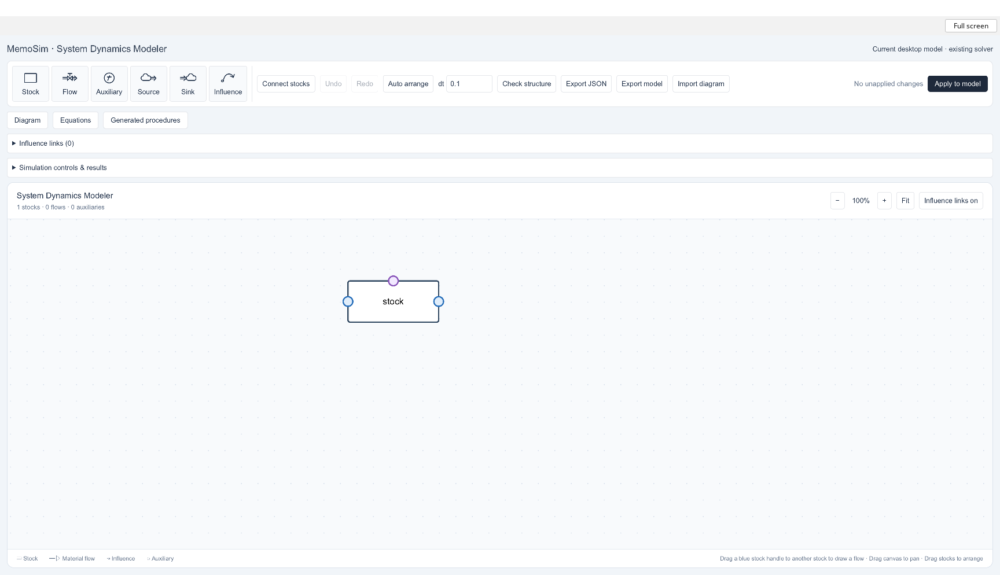

User manual · Beginner tutorial · Language dictionary
Offline edition · November 19, 2026
Powered by NetLogo. Modified modeling workspace with assistant, live dashboard and visual System Dynamics.
This PDF includes the user guide, course, complete primitive reference and legal information. Searchable offline Help, copying code and lesson progress are available in the web edition.
User manual · Version 1.0.4
Build a model. Understand its behavior.
MemoSim brings a live simulation, its controls, its measurements and an optional modeling assistant into one desktop workspace. Powered by NetLogo, it supports agent-based models and stock-and-flow models without replacing the underlying modeling language or engine.
Use this manual while working, or read the guided beginner tutorial for a complete exercise. The dictionary is the companion for language lookups. The PDF edition provides a printable reading copy; expandable notes and other browser interactions belong to this HTML edition.
Offline use: keep this folder together, including its assets, stylesheet and script. The desktop simulation engine runs locally. Cloud assistant requests and online reference searches need a connection; a separately configured local language-model service has its own availability requirements.
1. Start with a question
A model is an explicit set of assumptions, not a miniature copy of reality. Begin with a question narrow enough to test: for example, how does movement affect encounters, or how does a withdrawal rate change a reservoir? Identify what changes, what stays fixed, the time unit, and the measurements that would answer the question.
Open an existing model through the desktop File menu, or create a new one. Before changing an example, save a separate working copy. Read its Info tab first: it should explain the purpose, controls, initial conditions and known limitations. Existing models may use different button names and conventions, so follow their instructions rather than assuming every model behaves alike.
Inspect the Interface, Info and Code tabs before running.
Find the initialization command, usually a button named setup.
Initialize once, then run a single step if the interface supplies that control.
Watch the world, tick counter, monitors and plots together.
Stop, change one parameter, initialize again and compare.
The tutorial's first-model exercise develops this sequence into a hands-on investigation. For a first session, a small model with a clear stopping condition is more useful than a complex model with many controls.
What should I record before the first run?
Write down the model filename, MemoSim version, parameter values, intended run length, random seed if one is fixed, and your prediction. Recording a prediction helps separate what you expected from what the model actually produced.
2. Find your way around
The desktop owns the open model and runs its NetLogo code. The Interface tab provides the world view and model widgets; Code contains procedures; Info contains the model's explanation. The assistant is an additional panel connected to this workspace. Its engine status and its language-model status describe different connections.
The live dashboard
With Live dashboard selected, the two-dimensional Interface groups the existing widgets into Simulation, Controls and Live Analytics. Buttons and inputs remain usable while monitors and plots show results. These are the model's actual widgets, not images or duplicated measurements. You do not have to switch between a controls page and an analytics page.
The layout adapts to the available workspace. A wide window can show the areas side by side and, with enough controls, use a wider controls grid. At narrower widths, the simulation moves above the controls and analytics. Scroll when content exceeds the available space. Enlarging the window or hiding chat can make more widgets visible at once; it does not alter the model's rules.
Live dashboard with chat expanded. Read the Simulation, Controls and Live Analytics areas together; the widgets shown depend on the open model.
Collapse the assistant
Use Hide chat in the native MemoSim Assistant header. The remaining rail provides Show chat; the corresponding Tools menu action also changes visibility. Collapsing keeps the embedded assistant attached and preserves its conversation. It is a space control, not a stop button: hiding chat does not cancel an assistant operation or stop a simulation. The collapsed preference is remembered.
The collapsed assistant returns horizontal space to the native workspace. Restore it with Show chat.
Clear Live dashboard to return to the original model canvas. Interface editing also restores the original widget arrangement. The dashboard is a presentation of that arrangement, not a replacement for its saved coordinates. Three-dimensional interfaces retain their original layout.
3. Run and compare
Initialization and execution have separate jobs. A typical setup procedure clears old state, assigns starting values, creates agents and resets ticks. A typical go procedure advances the model. These names are conventions: inspect the actual button commands and code when a model uses another design.
A normal button runs its commands once. A forever button repeats them until stopped or until its code stops execution. Clicking a running forever button stops that button. A model can also provide dedicated step and stop controls. Do not infer a control's behavior only from its label; its commands and forever setting determine what it does.
The speed control changes execution and display pacing. It does not change a model's scientific time unit or a System Dynamics timestep. A tick is whatever time interval the author defines. Faster display is not a substitute for a different integration step or a longer simulated duration.
Parameters can be read during initialization, during every step, or only under a condition. A slider change may therefore take effect immediately or only after setup. For a controlled comparison, stop, record the new value, initialize and run for the same duration. Never compare one run's transient startup with another run's long-term state without explaining that difference.
Why did setup erase my results?
Many models use clear-all, which clears the world and plots. This is normal initialization behavior. Export or record results before another setup, and keep the saved model separately from the output of a particular run.
4. Edit the original interface
Use the Interface editing tools when adding, arranging or changing widgets. Disable Live dashboard if you want to work directly on the original canvas. Editing a dashboard widget switches to that original editing arrangement. Return to interaction mode to operate the model normally.
The interface supports buttons, sliders, switches, choosers, input boxes, monitors, plots, notes and an output area. The context menu offers widget creation. Set each widget's contents deliberately: a monitor needs a reporter; a button needs commands; a slider needs a variable name, bounds, increment and value. A note explains the interface but does not execute code.
Inputs such as sliders define interface variables. Avoid declaring the same variable again in globals. When renaming an input, update every procedure and widget expression that refers to it, then compile and initialize. Save before major interface changes so that you have a clear recovery point.
Design for the person running the model. Put units in labels or nearby notes, choose defensible input ranges, and explain whether changes require setup. Keep initial conditions separate from policy controls in your naming. The dashboard automatically groups widgets by type, so a clear widget name remains useful even when its screen position changes.
5. Read and write NetLogo code
NetLogo distinguishes commands, which do something, from reporters, which return a value. Procedures beginning with to contain commands; procedures beginning with to-report return a result with report. Square brackets delimit instruction blocks and lists. A semicolon starts a comment extending to the end of its line.
Agent context matters. The observer can create turtles; ask turtles [ ... ] runs instructions in each turtle's context. Patches are world locations, turtles are mobile agents, and links connect turtles. A command that is valid for a turtle may be invalid for the observer. Read an error's context as well as its highlighted text.
A complete small model
In a new, separate model, put this example in Code. It needs no sliders or extensions. Compile it, then enter setup in the observer Command Center. Enter go for one step, or repeat 20 [ go ] for twenty. You can later create setup and forever-go buttons with those commands.
to setup
clear-all
random-seed 104
create-turtles 20 [
setxy random-xcor random-ycor
set color blue
set size 1.2
]
reset-ticks
end
to go
ask turtles [
right random 60
left random 60
if can-move? 1 [ forward 1 ]
]
tick
end
to-report population
report count turtles
end
The movement guard makes the example safe at a non-wrapping boundary. random-seed fixes the initial random sequence for this example. It is placed after clear-all and before random initialization. The population reporter returns a number and can be used by a monitor. Movement alone does not create or remove agents, so population should remain twenty.
Inspect before changing
The Command Center can run short commands and evaluate values. In the observer context, show count turtles prints the current count. Use let for a local name and set to change an existing variable. Model-wide declarations belong before procedures. After editing, compile before running; address the first meaningful error before making unrelated changes.
Some reporters require parentheses to make their inputs clear. For example, mean [xcor] of turtles needs at least one turtle to produce a meaningful mean. Tests should include empty agent sets, boundary conditions and zero denominators. See the code lesson and language dictionary for further practice.
6. Read monitors and plots
A monitor evaluates its reporter against the current model state. It is useful for a count, mean, total or other compact measurement. Decimal places affect presentation, not the underlying precision. A missing or invalid measurement usually means its expression cannot be evaluated in the current state, rather than that the dashboard lost a separate data stream.
A plot contains pens and plotting instructions. A common time-series pen uses ticks horizontally and a quantity vertically. However, a model may plot a distribution or an explicitly chosen x-coordinate. Always inspect axis labels and pen update commands before interpreting a curve. A flat line can be a valid constant value, a scale problem, or a pen that is not being updated.
For the movement example above, create a monitor with reporter count turtles. To add a time series, create a plot named Population, keep a pen, and set that pen's update commands to the following:
plot count turtles
Run setup and step again. Standard tick-based model execution updates plots through the engine's plotting cycle. If a larger model explicitly controls plot updates, inspect that code before adding additional calls, or you may record points twice.
Native plot editing and export actions remain available through their existing controls and context menus. Use them to inspect pen settings or retain output. This release does not introduce a universal interactive chart editor, linked brushing, crosshairs, synchronized zoom or automatic statistical confidence bands. The modeler has its own small stock-history display, described below; it is not a replacement for saved experiment data.
7. Configure and work with the assistant
The assistant can inspect model information, propose and apply code or widget changes, run commands and report results through tools. Tool activity is visible in the conversation. A request to build or repair a model can change the live document; do not assume that every suggestion is held for a separate approval click. Save a working copy before a substantial request.
Connect a provider
Open Settings, the LLM status pill, or Provider & model in More actions.
Create a named API connection, using a preset if appropriate.
Select the API type: OpenAI-compatible Chat Completions or Anthropic Messages.
Enter the provider's API base URL and your own credential where required. A chat website address is not an API base URL.
Fetch the model list where supported, or enter an exact model identifier provided by your service.
Test the connection, save it and select the intended active connection.
Tool-calling support is essential for model editing. A reachable service that only returns conversational text may still be unsuitable. Temperature, output-token limit and thinking options depend on the selected service and model; start with compatible defaults. A successful connection test does not prove that every extension or every modeling request will work.
Enter credentials only in settings, never into model code, chat prompts, screenshots or shared documents. The settings interface retains saved credentials without displaying them again. Local model execution and local project storage do not mean cloud prompts remain on the computer: the selected provider receives request context needed for the assistant's work. Review what you include before using confidential models or datasets.
Ask for a testable change
A useful request states the objective, variables, expected controls and acceptance check. For example: “Keep the current movement rule. Add a monitor for count turtles, run setup and twenty steps, and report whether population stays constant.” Follow the tool results, not just the assistant's final prose. Compilation establishes language validity; it does not establish scientific validity.
The LLM is offline, but the model runs. Is that an error?
No. The native engine and the assistant provider are separate. Continue using local code, widgets and simulations. Cloud requests need internet access; a local provider needs its configured service running and reachable. Online reference search is another independent network feature.
8. Use the System Dynamics Modeler
Open the System Dynamics Modeler from Tools. It opens in a separate desktop window with a Full screen control. The modern editor is displayed in the existing embedded WebView and communicates with the open desktop document. Simulation uses the existing NetLogo runtime and System Dynamics machinery; the diagram editor is not a second independent solver.

The actual MemoSim System Dynamics Modeler, opened in its separate native window and connected to the desktop engine. A standalone browser view can edit diagrams without a desktop simulation connection.
The modeler offers Stock, Flow, Auxiliary, Source, Sink and Influence tools. Click a tool to configure an element, or drag a supported tool onto the canvas. Select an element to edit its name, initial value or equation. Save element updates the draft. It does not yet apply the whole draft to the desktop model.
Connect stocks lets you choose a source stock followed by a destination. For a flow from or to the outside, use the flow endpoint controls and select Outside (cloud). Give each quantity a distinct, descriptive name. Renaming updates diagram equations, but references elsewhere in model code and widgets still need compilation and review.
Draft, check, apply, save
Pause simulation and finish any pending command before editing.
Make changes and Save element. Look for Unapplied changes.
Use Check structure for diagram-level validation.
Use Apply to model to load and compile the draft against the desktop document.
Read any errors. On success, run Setup before stepping again.
Save the desktop model file to retain the applied document on disk.
Applying resets simulation state. If compilation fails, the application attempts to restore the previous model and keeps the draft available for correction. Read the returned message: restoration can also fail. Export the draft before disruptive recovery, and retain a known-good model file rather than relying solely on in-memory recovery.
How do I keep or discard draft work?
Use Undo and Redo for draft edits. Export JSON keeps the diagram separately; Export model writes a model-format copy. Import diagram accepts a compatible JSON diagram or the diagram in a model file. There is no dedicated Discard button. Closing the native modeler can hide its window while preserving its unapplied draft, so closing is not a reliable discard action. Undo back to the applied baseline when possible. For recovery after a conflict, export your draft and save the desktop document before restarting the application and reopening the modeler.
The modeler checks whether the desktop document changed since its snapshot. If it reports a conflict, do not repeatedly apply over newer work. Save both versions of your work, reload from a stable desktop document, then reintroduce the intended diagram changes. Avoid simultaneous assistant edits and modeler edits to the same document.
9. Understand stocks, flows and time
A stock accumulates a quantity, such as water measured in liters. A flow changes a stock at a rate, such as liters per hour. An auxiliary supplies a constant or equation used by other quantities. A source or sink represents transfer across the modeled boundary, not another hidden stock.
Choose units before writing formulas. If a stock holds 100 liters and an outflow is 10 liters per hour, its initial rate of change is minus 10 liters per hour. The timestep dt is the integration interval in the chosen time units. It must be positive. Changing dt affects numerical behavior; changing display speed does not.
A useful first diagram has a stock named water with initial value 100, an auxiliary drain-fraction equal to 0.1 per time unit, and a flow from water to outside with rate drain-fraction * water. Its outflow falls as the stock falls. Compare this with a constant outflow, which has a different assumption and needs special attention near an empty reservoir.
Influence arrows show dependencies. Drawing an arrow does not edit an equation. In particular, arrows into stocks are diagram-only: accumulation is determined by flows. Use Derive from equations to rebuild inferred dependencies, and inspect the actual formulas to establish what affects what. Allow negative stock values or reversible flows only when their interpretation makes sense.
The Equations tab lists initial values and formulas. Generated procedures reads the existing compiler output through the desktop bridge after applying; it is not a second equation generator. The enclosing model still needs suitable setup and go procedures calling the generated System Dynamics procedures. Applying a diagram alone does not guarantee those calls exist.
Expand Simulation controls & results to use Setup, Step, and Run/Pause. These invoke the connected model's setup and go commands, then sample stocks and ticks. They require an applied draft and successful setup. The small history chart retains a recent rolling sample window, not a permanent run archive. Use ordinary model plots or experiment output for evidence you need to preserve.
Test timestep sensitivity: repeat with a smaller dt while comparing the same modeled duration and inspecting how your go procedure advances ticks. Do not automatically identify one displayed tick with one physical time unit. See the stock-and-flow tutorial for a worked exercise.
10. Run BehaviorSpace experiments
BehaviorSpace runs a defined model experiment repeatedly across parameter combinations. Use it when a single animated run cannot answer your question. An experiment specifies initialization commands, step commands, measured reporters, repetitions, varied values and a stopping rule or step limit. Save the definition with the model.
The desktop provides real BehaviorSpace support. The assistant can define named experiments and run them using a headless engine process. This is a batch execution path, not an animation of the current dashboard. Start with a small test to check that initialization, metrics and stopping conditions work without manual interaction.
For example, vary two movement settings over three values each, repeat five times, and you have forty-five runs. Adding parameters multiplies combinations quickly. Estimate that count before a sweep. Ensure each varied name exists and each metric is a valid reporter in the appropriate context.
Assistant experiment results can contain an abbreviated table and grouped summaries. A truncated return is not the complete output, and its last retained row may not be a run's true final observation. Do not report summary means as complete evidence when truncation is indicated. Use the native experiment output workflow to retain full results for analysis, and inspect run identifiers and stopping times.
Use multiple seeds for stochastic comparisons. Report variability as well as averages, and distinguish a parameter's effect from random variation. The experiment lesson develops a small sweep before scaling up.
11. Save files, projects and dependencies
A desktop model file and an assistant project serve different purposes. A .nlogox file preserves the model document, including its code, interface, Info and supported model sections. Save or Save As through the desktop for a portable model copy. A saved model is not automatically a saved simulation world or a full history of its outputs.
Assistant projects retain their conversation and model specification in local application storage. The model selector restores a saved project into the connected engine. Switching projects can therefore replace what is currently running. Save native file edits before switching; do not treat the project selector as a passive conversation filter.
Project persistence depends on the local application service. If it reports a save failure or conflict, preserve the current model as a file before closing or reloading. Deleting a project removes that model-and-chat entry; it should not be your method for cleaning an independently saved model file. Back up portable files and required datasets as well as application data.
Optional extensions and data
Extensions are model-specific dependencies, not prerequisites for every MemoSim run. A declaration such as extensions [nw] requires an available compatible extension. Network analysis with nw also requires a meaningful graph and appropriate context. Python integration with py requires a separately configured Python environment and any imported packages. GIS models need gis, the actual datasets and a deliberate coordinate-system workflow.
A shapefile commonly has several companion files; preserve the dataset together. Verify actual filenames and access permissions rather than guessing from a folder name. Relative file paths depend on the model's execution context, and assistant batch experiments may execute from a temporary directory. For reproducibility, document paths and dependencies explicitly and test with a clean copy.
Installing or downloading a missing extension may require a network connection even though an already installed model can run locally. Extension availability also differs between desktop and web engines. Test the target environment before distributing a model.
12. Explain the model and export to Word
The Info tab is the model's own documentation. Use its edit control to write a concise purpose, operating instructions, assumptions, units, variables, experiment design, limitations, credits and references. Explain surprising results and what a user should check before drawing a conclusion. Save the model to keep these edits with the document.
The Info toolbar includes export to Word. Choose a destination in the save dialog to create a .docx document. The exporter supports headings, paragraphs, emphasis, code, lists, quotations and links. It also handles right-to-left paragraph direction. Images are represented by their alternative text rather than embedded image data.
This export contains the Info content, not an automatic capture of the world, charts, conversation or experiment tables. Put the interpretation and relevant results into Info deliberately, and retain images and numerical data separately. Open the exported document to inspect formatting and references before sharing it.
For this documentation set, use the local PDF manual for printing and the HTML pages for navigation and expandable material. Keep version numbers with reports so readers can distinguish the MemoSim release from the underlying NetLogo engine version and from the revision of your model.
13. Validate and reproduce a result
Verification asks whether the implementation follows its stated rules. Validation asks whether those rules are useful for the question and evidence at hand. A compiler, an assistant and a plausible-looking plot cannot settle the second question for you.
Check simple cases before realistic ones. With no creation or deletion, a population should stay constant. With no flows, a stock should stay fixed. In a closed transfer system, total material should be conserved within expected numerical tolerance. Test zero inputs, empty populations and extreme settings, and explain any bounds or clamping rules.
A fixed random seed helps repeat a stochastic run when the code, engine, initialization sequence and execution conditions match. It does not make a result universally deterministic across modified models or environments. For scientific comparisons, record the seed schedule and use independent repetitions, rather than selecting a favorable single seed.
These boxes are a reading aid, not an executable test or certification. Reopen the saved model, initialize and repeat the documented procedure before declaring a result reproducible.
14. Troubleshoot systematically
Preserve your work first. Record the full error, the operation that triggered it, and whether it occurred at compilation, setup, execution, export or provider connection. Change one cause at a time, then rerun the same small test.
The dashboard is crowded or a widget seems missing
Enlarge the desktop window, collapse chat and inspect the scrollbars. The responsive layout may place the simulation above controls and analytics. Disable Live dashboard to inspect the original canvas. An empty analytics area can simply mean the model has no monitor or plot.
A name is undefined or already defined
Check spelling, declarations, widget variable names and agent context. Inputs can define globals, so declaring their names again can cause a duplicate definition. After a rename, inspect code, monitor reporters, plot commands and experiment definitions together.
Run fails, ticks are uninitialized, or a plot is empty
Run setup first and inspect its error output. Confirm that it reaches reset-ticks, that go advances ticks appropriately, and that pens have valid update commands. Check for empty agent sets and invalid arithmetic. Reduce the model to one step before trying another long run.
The assistant reports an authorization or model error
Check the selected connection, API type, base URL, credential and exact model identifier. Refresh the model list if the service provides one. Distinguish an expired credential from a service outage or an unsupported generation option. Never paste the credential into an error report.
The assistant panel cannot reach its local service
A local service failure is different from an LLM provider failure. Preserve the desktop file, then restart the packaged application and inspect its displayed service error. Verify that you launched the intended MemoSim installation. Do not delete project storage as a first troubleshooting step.
The modeler will not run or apply
Pause active commands, Save element, Check structure and Apply to model; run Setup after success. Ensure the model has suitable setup and go procedures. A desktop-change conflict needs deliberate recovery from a stable document. Export the draft before restarting, because hiding the modeler preserves its draft in memory but does not save it to disk.
A dataset, extension or experiment works in one place only
Compare engines, installed extensions, external interpreter dependencies, filenames, permissions and working directories. A batch process may not have the same relative-path context as the visible model. Test a minimal input and a single short experiment before scaling up.
Word export is missing pictures or looks different
Info export retains supported text structure; images become alt text. Open the file in a Word-compatible editor and inspect its formatting. A report requiring figures needs those figures added separately. Verify destination permissions if saving fails.
15. Reference, credits and scope
Continue with the guided tutorial, consult the dictionary, or open the PDF manual. This manual describes MemoSim 1.0.4's desktop workflow. Browser-based runtimes can have different primitive and extension support; a diagram opened without a connected desktop runtime can be edited or exported without being executable there.
MemoSim is powered by NetLogo. NetLogo was authored by Uri Wilensky at the Center for Connected Learning and Computer-Based Modeling, Northwestern University. Preserve upstream copyright notices, model-specific credits and third-party notices when modifying or distributing work. The upstream distribution states GNU GPL version 2 or later for NetLogo; consult the bundled licenses and credits for the applicable notices and component details.
For publications, retain the model's own citation and identify the software used. The upstream NetLogo citation is: Wilensky, U. (1999). NetLogo. Center for Connected Learning and Computer-Based Modeling, Northwestern University, Evanston, IL. Identify MemoSim 1.0.4 separately when describing this interface and workflow.
Simulation outcomes depend on assumptions, data and numerical choices. This documentation explains software operation; it does not certify generated code, predicted outcomes or fitness for a particular decision. Keep the reasoning, evidence and limitations alongside the model.
A hands-on, offline course
Build and investigate a random walk
In this guided first model, a walker starts at zero and takes one step left or right each tick. You will create a model, connect controls and a plot, test repeatability, compare runs, and save your work. You do not need a network connection, an AI assistant, or programming experience.
Time: about 45–60 minutes. What you need: MemoSim Desktop. Work through the lessons in order; the complete source is available below if you want to paste rather than type.
Before starting
This tutorial uses the native NetLogo workspace inside MemoSim. The Interface tab is the model's dashboard: it shows the world and any controls, monitors, and plots you add. The Code tab is where you define procedures. A button in the dashboard calls a procedure by name; a slider supplies a global input variable to that same code.
A tick is one unit of simulated time, not one second. A random walk is a sequence of randomly selected steps. Here, the walk's position is an integer: it changes by exactly −1 or +1 per tick. Randomness means a run can differ from the last one; a chosen seed makes that sequence repeatable.
Your progress: check lessons as you complete them. Progress is stored only in this browser when local storage is available.
0 of 9 lessons completed on this browser.
1. Create a model and find your way around
Start MemoSim Desktop. You can do every programming and simulation step here with no internet access.
Choose File → New to create an empty model. Select the Code tab. You should see the editor where procedures are written.
Switch to Interface. The initially empty dashboard contains the world view and widget editing controls. In Live dashboard mode, simulation, controls, and analytics share the dashboard. The chat dock is a separate, optional part of the desktop window.
Before adding widgets, orient yourself. In Code, text is a program. In Interface, a slider or button is an editable object and an interactive control. When you add an Interface button, you tell it which procedure to run; it does not copy that procedure into the Code editor.
Live dashboard with the simulation, controls, and analytics visible together.
Checkpoint: switch between Code and Interface without closing the model. Return to Code before continuing.
2. Write the model's two procedures
Enter the following in the Code tab. The opening and closing words to and end mark each procedure. Indentation is for people reading the code; the brackets group commands that should happen together.
globals [ walk-distance ]
to setup
clear-all
set walk-distance 0
random-seed seed-value
reset-ticks
end
to go
if ticks >= step-limit [ stop ]
ifelse random 2 = 0
[ set walk-distance walk-distance - 1 ]
[ set walk-distance walk-distance + 1 ]
tick
end
Download the same source as a plain-text file. If you use the copy button, paste into the Code editor. If you type it, preserve the procedure names, square brackets, and parentheses exactly.
Read it from top to bottom:
globals [ walk-distance ] creates a model variable to hold the current position.
setup clears the previous run, sets the position to zero, initializes the random generator from the slider, and resets the clock.
go stops once the tick limit is reached. Otherwise random 2 produces either 0 or 1; the matching branch changes position by −1 or +1, then tick advances time by one.
The slider names are intentional dependencies on widgets you will add next. NetLogo creates a global for each slider. Declaring either of them again in globals would create a duplicate-variable error.
The code refers to step-limit and seed-value, which will be supplied by the two sliders in the next lesson. Before those widgets exist, NetLogo may report the expected “nothing named” error. Add both sliders before treating that message as a code defect. Once the sliders exist, switch between Code and Interface to check the complete model. A missing bracket or misspelled slider name is still enough to prevent compilation.
3. Add sliders and buttons
Switch to Interface and choose the widget-edit control. Right-click the canvas and choose a widget type from its menu to add each slider, button, monitor, or plot. If an edit dialog opens, enter the settings below and confirm them. Return to the interact control when the widgets are ready.
The variable names must use the same spelling and hyphens as the code. The slider value is available directly as a global; do not add slider variables to the declaration at the top of the Code tab.
When adding a widget, the selected edit tool may attach its shadow to the pointer. Place it on the canvas and click to finish. You can move and resize it later in edit mode. Arrange the two buttons and sliders together as controls, and place the monitor and plot near one another as measurements. In the dashboard view, the native layout groups these real widgets by function; if the original canvas is easier for editing, switch off Live dashboard, edit there, then turn it back on.
Button: initialize
Commands:setup
Leave Forever off.
Give it a display name such as Setup.
Button: advance
Commands:go
Turn Forever on, so the button repeats go until it is pressed again or the run reaches its limit.
Give it a display name such as Go.
Return to Interface's interact mode when editing is complete. Click Setup: walk-distance should become 0 and ticks should be 0. Click Go: ticks should increase until it reaches the slider's value (40 by default). Pressing Go again after the limit should not extend the run. Change step-limit, click Setup, then Go to start a new run with the new limit.
For a single-step test, edit the Go button and turn Forever off temporarily. Each click should advance one tick. Restore Forever afterward, or simply keep it off for manual stepping.
Checkpoint: with the limit at 40, a completed run has exactly 40 ticks. At the default seed, Setup resets the random sequence each time, so clicking Setup and running again produces the same result.
4. Add a monitor and a plot
A monitor displays a reporter's current value. A plot retains a series of values over simulated time. Add a monitor and configure it with the reporter walk-distance. Its display should read 0 immediately after Setup and the walk's final position after Go completes.
Add one plot and give it a meaningful title, such as Position over time. Set its horizontal axis label to Ticks and vertical axis label to Position. Open the plot's edit panel, select its default pen in the pen list, and put the following in that pen's Update commands field:
if ticks > 0 [ plotxy ticks walk-distance ]
The command plots the current position against the current tick. The condition skips plotting at tick zero. The model's Setup clears the plot as part of clear-all; running Go draws one point per tick. Leave automatic axis scaling enabled if the editor offers that setting. The position is not guaranteed to stay near zero, so a fixed narrow vertical range can hide valid values.
Arrange the widgets so you can see the simulation area and all controls and analytics. Hide chat to give the dashboard more room, as shown here:
The optional chat dock can be collapsed when you want more room for the native dashboard.
Use the native chat dock's collapse control if it is open; expanding it restores access to the assistant. This changes available screen space, not the simulation or the model. The dashboard also keeps controls and analytics visible alongside the world; switching to the original canvas layout is optional.
If your plot is hard to read, edit its title and axis labels before changing the code. A label that says “position” is more informative than the default pen name. If the path seems to jump by more than one between visible marks, remember that a plot may redraw after several commands at once; the code still updates the position by exactly one per tick. Compare the final tick and monitor value to validate the run rather than assuming every screen refresh is a single step.
Run Setup and Go. Expected result: the monitor changes as steps occur, the plot gains points, and the horizontal axis reaches the run limit. Since each step changes position by one, the final result is an integer between −40 and +40 for a 40-step run, inclusive. It is not necessarily zero. The plotted path begins at the first step's position and ends at the final one.
5. Reproduce a run, then change it
Repeatability is a useful debugging tool. A random seed chooses a deterministic sequence of pseudorandom choices. This model calls random-seed seed-value during Setup, so reusing the same seed and limit repeats the same steps.
Set the run length to 40 and seed to 2025. Press Setup, then run Go to completion. Record the monitor's final value.
Press Setup and run Go again without changing either slider. The plotted path and final position should match the first run.
Change the seed to 2026. Press Setup and run again. The path will usually differ; the final position may differ too. It can coincidentally match the earlier final position, so compare the path as well.
Restore seed 2025, set the run length to 80, then repeat. There should now be 80 ticks and 80 plotted points, with a longer path.
The outcome range is a check, not a prediction: after 80 steps the displacement must be between −80 and +80, because each step changes it by one. Many sequences end much closer to zero because left and right choices partly cancel, but no particular endpoint is guaranteed.
Show the solution
The run has 40 ticks. Every completed tick is one step, and the step-limit slider is set to 40. The stop check runs before the next step, so the model stops at 40 rather than taking a 41st step.
Practice changing one thing
Keep the seed at 2025 and compare runs with 20, 40, and 80 steps. Record both the tick count and final position. Each run should finish at its selected length; longer runs allow a wider range of final positions. Now hold the length at 40 and compare seeds 2025 and 2026. Did changing the length or changing the seed alter the run you expected? State which input you changed before drawing a conclusion.
Check your reasoning
Changing step-limit changes how many steps are allowed, so both the duration and possible endpoint range change. Changing seed-value changes the deterministic left/right sequence but not the 40-step duration or the allowed endpoint range. The values need not have a particular ordering; compare actual repeats, not a guessed result.
6. Compare runs as an experiment
A single run is one example, not a general conclusion. To investigate variation systematically, use NetLogo's BehaviorSpace experiment tool, available from the native Tools menu. It runs a defined setup/go cycle repeatedly and records selected metrics.
Open BehaviorSpace from Tools and create a named experiment, for example Seed comparison.
Set setup commands to setup and go commands to go. Set the experiment's stop condition to ticks >= step-limit, so every run finishes at the selected limit. The condition is evaluated after each step.
Set repetitions to 1, add walk-distance and ticks as metrics, and clear Run metrics every step to record final measurements instead of a row at every tick. The ten seed values below will give you ten runs; setting ten repetitions too would multiply this into 100 runs.
In the variable values field, enter ["seed-value" [1 1 10]]. This steps from seed 1 by 1 through seed 10. Keep step-limit fixed at 40 for the first comparison.
Run the experiment and inspect the results table. Every completed run should report 40 ticks. Final positions can differ by seed, and each must lie between −40 and +40.
BehaviorSpace opens its experiment definition through the native Tools workflow. Set the time limit high enough to allow all 40 steps; the explicit stop condition is what ends a normal run. The variable values syntax uses a Logo list with the variable name in quotes and the first, increment, and last values in a second list. Save the experiment results outside the model if you need to retain the table.
Expected result: ten run IDs, one for each seed, and (when measuring only at the end) ten final records. Each record should show 40 ticks and a displacement from −40 through +40. First run one seed as a pilot, verify the table contains the metrics you expect, then add values. For this simple model there are only two meaningful outputs: completed time and final displacement. More rows are not automatically better evidence.
7. Diagnose common errors
“There is already a global variable called …”
A slider already creates a global variable. Remove step-limit or seed-value from globals; keep only walk-distance. Check spelling if the message names a different variable.
“Nothing named STEP-LIMIT has been defined”
Add the run-length slider and use the exact global name step-limit. Check hyphens and spelling in the slider and code.
The Go button does not run or stops immediately
Confirm that its commands field says go, its Forever option is enabled for continuous running, and you pressed Setup first. Check that the limit is at least 1.
The plot is blank
Confirm its update commands include if ticks > 0 [ plotxy ticks walk-distance ], run Setup, then Go. Ensure you are looking at the plot on the Interface dashboard.
The plot stops before its expected length
Read the slider value and the tick counter. The model deliberately stops at step-limit; a limit of 1 means one step. Press Setup after changing the limit.
My run differs from the previous run
Check whether seed-value changed. Setup resets the generator from the current slider; matching seed and run length should reproduce the sequence.
When an error appears, read the first reported message and follow its location before changing unrelated code. Correct one issue at a time, then rerun Setup. If needed, use the Code tab's undo and return to the last working version.
Distinguish a compile error from an unexpected result. If the model refuses to run, first inspect spelling, brackets, and the widget that supplies a referenced global. If it runs but gives an unexpected endpoint, check the seed, limit, tick count, and whether Setup was pressed after changing inputs. A surprising but valid random endpoint is not a syntax error.
8. Save, reopen, and preserve your work
Choose File → Save As and save the model under a recognizable name such as Random Walk.nlogox in a folder you can find again.
Save after meaningful edits, especially after adding or configuring widgets. A saved model contains its code and dashboard widget settings.
If you used BehaviorSpace, save its result table separately when you want to keep the measured runs.
For a backup, use the supported File menu export action when present, or make a second copy of the saved model using your file manager. Do not rename a text file containing code to .nlogox; a NetLogo model is more than its source text.
To check your save, close the model after saving, open the saved model from the File menu, and confirm that Code, the two sliders, both buttons, the monitor, and the plot are present. Run Setup and Go once more. Keep an untouched copy before trying major edits.
NetLogo's File menu also provides export actions for model artifacts such as the interface image, world data, output, and plots. Those exports are useful snapshots of a particular run; they are not substitutes for saving the model file, which preserves the code and widgets needed to reproduce it. Choose the export that matches what you intend to share, and include the model and experiment settings when another person needs to repeat your result.
9. Optional: ask the assistant for help
The lessons and model work without AI. The separate chat panel can explain a compiler message or help you think of a follow-up experiment, but it is optional and does not replace checking the model's behavior.
Generating AI responses requires a configured model provider. A remote provider requires an internet connection; the desktop simulation, Code editor, widgets, and saved model do not. If the panel or provider is unavailable, continue with the offline Code and Interface tools. Never accept a code change without reading it, checking that its slider names match your widgets, and rerunning your test.
For a focused help request, include the exact error text, the procedure you were editing, and what you expected to happen. Do not include private or sensitive information in a prompt.
10. Optional: build a stock-and-flow model
The random walk updates a variable explicitly in go. System Dynamics instead represents an accumulated quantity as a stock and its rate of change as a flow. This short exercise models water entering a tank at a constant rate. Work in a new document so it cannot overwrite your random-walk model.
Save the random walk. Choose File → New, then Tools → System Dynamics. MemoSim opens the visual modeler in its own window.
The initial diagram may contain a stock named stock. Select it, set Name to water and Initial value to 100, then choose Save element. If the diagram is empty, use + Stock first.
Choose + Source (or + Flow). Set Name to inflow, Rate equation to 5, From to Outside (cloud) and To to water. Choose Save element. This is water entering the model; a stock-to-stock arrow would model a transfer instead.
Keep dt at 1. Choose Check structure, then Apply to model. Structural validation checks the diagram; Apply also compiles the equations with the simulation engine.
After a successful apply, return to the main document's Code tab and enter the two wrapper procedures below. A new document has no procedures yet, while the modeler's buttons call setup and go. Choose Check after adding them. Then close and reopen the still-clean modeler from Tools before editing any flow, so its document baseline includes the new Code. Generated system-dynamics-go already advances model time; do not add another tick.
Return to the modeler and use its Setup and Step controls. The stock begins at 100. With a constant rate of 5 and a one-unit time step, each step adds 5. After ten integration steps, it should be 150. Read the live stock result rather than judging the diagram's appearance.
Change the rate to 10, save the element and apply again. Apply resets simulation state. Setup and repeat ten steps: the expected stock is 200. Save the native model and use Export JSON if you also want a reusable diagram draft.
to setup
clear-all
system-dynamics-setup
end
to go
system-dynamics-go
end
These wrappers belong in the model's ordinary Code tab, not in a stock or flow equation. They call the engine-generated solver procedures without duplicating its clock updates. A Code edit changes the native document even if the modeler does not show an unapplied warning. Refresh its baseline while its diagram is still clean, as instructed above. If you already have a dirty diagram draft, export it before attempting recovery; closing a dirty modeler alone does not discard or refresh it.
An influence arrow only shows a dependency; it does not automatically write a rate equation. Closing the modeler hides its window and retains the draft. Do not rely on closing and reopening it to discard changes. See the manual's draft and recovery guidance before trying a different model.
Check your understanding
Starting at 100 with a constant inflow of 5, a time step of 0.5 adds 2.5 per step. Twenty such steps represent ten minutes and produce 150. Ten such steps represent only five minutes and produce 125.
What you learned
You created procedures, connected interface widgets to model variables, advanced a simulation by ticks, plotted a measurement, controlled pseudorandom behavior with a seed, compared runs, diagnosed common errors, and saved a working model. A useful next exercise is to add another measurement to the plot or use BehaviorSpace to compare a larger set of seeds while keeping the model's other settings fixed.
This PDF includes the MemoSim workflow glossary and complete language reference by category. For interactive search and individual primitive pages, open the bundled dictionary.html.
MemoSim Dictionary
Search the offline NetLogo 7.1.0-alpha1 language reference and the MemoSim workflow glossary. MemoSim uses the NetLogo language and engine with unchanged primitive names, syntax and semantics.
MemoSim workflow terms describe the application and its modeling tools; they are not executable primitives. The reference works offline; links marked online open material outside the bundle.
NetLogo language index
581 index entries, including aliases, operators, variables, keywords, and 3D entries. The 3D reference applies to the 3D engine, not the standard 2D dashboard.
This is an approximate grouping. Remember that a turtle-related
primitive might still be used by patches or the observer, and vice
versa. To see which agents (turtles, patches, links, observer) can
actually run a primitive, consult its dictionary entry.
Reports the arc cosine (inverse cosine) of the given number. The
input must be in the range -1 to 1. The result is in degrees, and
lies in the range 0 to 180.
Reports true if the given agentset is non-empty, false otherwise.
Equivalent to “count agentset > 0”, but more
efficient (and arguably more readable).
ifany?turtleswith [color=red]
[ show"at least one turtle is red!" ]
Note: nobody is not an agentset. You only get nobody back in
situations where you were expecting a single agent, not a whole
agentset. If any? gets nobody as input, an error results.
Reports a number in the range 0 to 140, not including 140 itself,
that represents the given color, specified in the HSB spectrum, in
NetLogo’s color space.
The first value (hue) should be in the range of 0 to 360, the second
and third (saturation and brightness) in the range between 0 and 100.
The color reported may be only an approximation, since the NetLogo
color space does not include all possible colors.
Reports a number in the range 0 to 140, not including 140 itself,
that represents the given color, specified in the RGB spectrum, in
NetLogo’s color space.
All three inputs should be in the range 0 to 255.
The color reported may be only an approximation, since the NetLogo
color space does not include all possible colors.
All of these operators take two inputs, and all act as “infix
operators” (going between the two inputs, as in standard
mathematical use). NetLogo correctly supports order of operations
for infix operators.
The operators work as follows: + is addition, * is multiplication, - is subtraction, / is division, ^ is exponentiation, < is less
than, > is greater than, = is equal to, != is not equal to,
<= is less than or equal, >= is greater than or equal.
Note that the subtraction operator (-) always takes two inputs
unless you put parentheses around it, in which case it can take one
input. For example, to take the negative of x, write (- x), with
the parentheses.
All of the comparison operators also work on strings.
All of the comparison operators work on agents. Turtles are
compared by who number. Patches are compared top to bottom left to
right, so patch 0 10 is less than patch 0 9 and patch 9 0 is less
than patch 10 0. Links are ordered by end points and in case of a
tie by breed. So link 0 9 is before link 1 10 as the end1 is
smaller, and link 0 8 is less than link 0 9. If there are multiple
breeds of links unbreeded links will come before breeded links of
the same end points and breeded links will be sorted in the order
they are declared in the Code tab.
Agentsets can be tested for equality or inequality. Two agentsets
are equal if they are the same type (turtle or patch or link) and contain
the same agents.
If you are not sure how NetLogo will interpret your code, you
should add parentheses.
show5*6+6/3=>32show5* (6+6) /3=>20
Many extension objects may be tested for equality and inequality
using = and !=.
For instance, the array, matrix, and table objects returned by their
respective extensions may be compared for equality / inequality.
Extension objects may not be tested using <, >, <=, or >=.
Reports the arc sine (inverse sine) of the given number. The input
must be in the range -1 to 1. The result is in degrees, and lies in
the range -90 to 90.
The specified agent or agentset runs the given commands. Because
agentset members are always read in a random order, when ask is
used with an agentset each agent will take its turn in a random
order. See Agentsetsfor more information.
askturtles [ fd1 ]
;; all turtles move forward one stepaskpatches [ setpcolorred ]
;; all patches turn redaskturtle4 [ rt90 ]
;; only the turtle with id 4 turns right
Note: only the observer can ask all turtles or all patches. This
prevents you from inadvertently having all turtles ask all turtles
or all patches ask all patches, which is a common mistake to make
if you’re not careful about which agents will run the code you
are writing.
Note: Only the agents that are in the agentset at the time the
ask begins run the commands.
This primitive exists only for backwards compatibility. We
don’t recommend using it new models.
The agents in the given agentset run the given commands, using a
turn-taking mechanism to produce simulated concurrency. See the Ask-Concurrent section of the Programming Guide for details on how this works.
Note: Only the agents that are in the agentset at the time the
ask begins run the commands.
Reports a subset of the given agentset that includes only the
agents on the patches at the given coordinates (relative to this
agent). The coordinates are specified as a list of two-item lists,
where the two items are the x and y offsets.
If the caller is the observer, then the points are measured
relative to the origin, in other words, the points are taken as
absolute patch coordinates.
If the caller is a turtle, the points are measured relative to the
turtle’s exact location, and not from the center of the patch
under the turtle.
askturtlesat-points [[24] [12] [1015]]
[ fd1 ] ;; only the turtles on the patches at the;; coordinates (2,4), (1,2) and (10,15),;; relative to the caller, move
Converts x and y offsets to a turtle heading in degrees (from 0 to
360).
Note that this version of atan is designed to conform to the
geometry of the NetLogo world, where a heading of 0 is straight up,
90 is to the right, and so on clockwise around the circle.
(Normally in geometry an angle of 0 is right, 90 is up, and so on,
counterclockwise around the circle, and atan would be defined
accordingly.)
When y is 0: if x is positive, it reports 90; if x is negative, it
reports 270; if x is zero, you get an error.
These pairs of commands are used to control the NetLogo feature of
auto-plotting in the current plot. Auto-plotting will automatically
update the x and y axes of the plot whenever the current pen
exceeds these boundaries when adding a new point with plotor plotxy. When using histogram to plot
values, only the y axis will automatically update its ranges, the x
axis will be unchanged.
Each plot has an auto-plotting settings called Auto xcale x-axis? and Auto scale y-axis? in the user
interface that determines if the plot will enable auto-plotting when
the model starts. Auto-plotting is useful when wanting to show all
plotted values in the current plot, regardless of the current plot ranges.
These commands will produce a runtime error if the current plot has not been set.
The turtle moves backward by number steps. (If numberis negative, the turtle moves forward.)
Turtles using this primitive can move a maximum of one unit per
time increment. So bk0.5 and bk1 both take one
unit of time, but bk3 takes three.
If the turtle cannot move backward number steps because it
is not permitted by the current topology the turtle will complete
as many steps of 1 as it can and stop.
printbase-colors=> [5152535455565758595105115125135]
askturtles [ setcolorone-ofbase-colors ]
;; each turtle turns a random base coloraskturtles [ setcolorone-ofremovegraybase-colors ]
;; each turtle turns a random base color except for gray
Emits a beep. Note that the beep sounds immediately, so several
beep commands in close succession may produce only one audible
sound.
Example:
beep;; emits one beeprepeat3 [ beep ] ;; emits 3 beeps at once,;; so you only hear one soundrepeat3 [ beepwait0.1 ] ;; produces 3 beeps in succession,;; separated by 1/10th of a second
When running headless, this command has no effect.
This is a built-in turtle and link variable. It holds the agentset
of all turtles or links of the same breed as this turtle or link.
(For turtles or links that do not have any particular breed, this
is the turtles agentset of all turtles or
the links agentset of all links respectively.)
You can set this variable to change a turtle or link’s breed.
(When a turtle changes breeds, its shape is reset to the default
shape for that breed. See set-default-shape.)
This keyword, like the globals, turtles-own, and patches-own
keywords, can only be used at the beginning of the Code tab, before
any procedure definitions. It defines a breed. The first input
defines the name of the agentset associated with the breed. The
second input defines the name of a single member of the breed.
Any turtle of the given breed:
is part of the agentset named by the breed name
has its breed built-in variable set to that agentset
Most often, the agentset is used in conjunction with ask to give
commands to only the turtles of a particular breed.
breed [micemouse]
breed [frogsfrog]
tosetupclear-allcreate-mice50askmice [ setcolorwhite ]
create-frogs50askfrogs [ setcolorgreen ]
show[breed] ofone-ofmice;; prints miceshow[breed] ofone-offrogs;; prints frogs
endshowmouse1;; prints (mouse 1)showfrog51;; prints (frog 51)showturtle51;; prints (frog 51)
When used on a list, but-first reports all of the list items of list except the first, and but-last reports all of the list
items of list except the last.
On strings, but-first and but-last report a shorter string omitting
the first or last character of the original string.
;; mylist is [2 4 6 5 8 12]setmylistbut-firstmylist;; mylist is now [4 6 5 8 12]setmylistbut-lastmylist;; mylist is now [4 6 5 8]showbut-first"string";; prints "tring"showbut-last"string";; prints "strin"
Runs commands1. If a runtime error occurs inside commands1, NetLogo won’t stop and alert the user that an
error occurred. It will suppress the error and run commands2instead.
The error-message reporter can be used in commands2 to find
out what error was suppressed in commands1. See error-message.
Sets all code-defined global variables (i.e., those defined inside of globals [ ... ]) to 0. Global variables defined by widgets are not affected by this primitive.
In the current plot only, resets all plot pens, deletes all
temporary plot pens, resets the plot to its default values (for x
range, y range, etc.), and resets all permanent plot pens to their
default values. The default values for the plot and for the
permanent plot pens are set in the plot Edit dialog, which is
displayed when you edit the plot. If there are no plot pens after
deleting all temporary pens, that is to say if there are no
permanent plot pens, a default plot pen will be created with the
following initial settings:
Does not set the counter to zero. After this command runs, the tick
counter has no value. Attempting to access or update it is an error
until reset-ticks is called. This is
useful if you want to set the model to a “pre-setup” state with some
forever buttons disabled.
This is a built-in turtle or link variable. It holds the color of
the turtle or link. You can set this variable to make the turtle or
link change color. Color can be represented either as a NetLogo
color (a single number), or an RGB color (a list of 3 numbers or 4
numbers with transparency). See details in the Colors section of the
Programming Guide.
Creates number new turtles. New turtles start at position
(0, 0), are created with the 14 primary colors, and have headings
from 0 to 360, evenly spaced.
If the create-ordered-<breeds> form is used, the new
turtles are created as members of the given breed.
If commands are supplied, the new turtles immediately run
them. This is useful for giving the new turtles a different color,
heading, or whatever. (The new turtles are created all at once then
run one at a time, in random order.)
If number is fractional, it will be rounded down to
the nearest integer (4.5 becomes 4, 10.9 becomes 10).
Used for creating breeded and unbreeded links between turtles.
create-link-with creates an undirected link between the caller and agent. create-link-to creates a directed link from the
caller to agent. create-link-from creates a directed link
from agent to the caller.
When the plural form of the breed name is used, an agentsetis expected instead of an agent and links are created between the
caller and all agents in the agentset.
The optional command block is the set of commands each newly formed
link runs. (The links are created all at once then run one at a
time, in random order.)
A node cannot be linked to itself. Also, you cannot have more than
one undirected link of the same breed between the same two nodes,
nor can you have more than one directed link of the same breed
going in the same direction between two nodes.
If you try to create a link where one (of the same breed) already
exists, nothing happens. If you try to create a link from a turtle
to itself you get a runtime error.
tosetupclear-allcreate-turtles5;; turtle 1 creates links with all other turtles;; the link between the turtle and itself is ignoredaskturtle0 [ create-links-withotherturtles ]
showcountlinks;; shows 4;; this does nothing since the link already existsaskturtle0 [ create-link-withturtle1 ]
showcountlinks;; shows 4 since the previous link already existedaskturtle2 [ create-link-withturtle1 ]
showcountlinks;; shows 5
end
directed-link-breed [red-linksred-link]
undirected-link-breed [blue-linksblue-link]
tosetupclear-allcreate-turtles5;; create links in both directions between turtle 0;; and all other turtlesaskturtle0 [ create-red-links-tootherturtles ]
askturtle0 [ create-red-links-fromotherturtles ]
showcountlinks;; shows 8;; now create undirected links between turtle 0 and other turtlesaskturtle0 [ create-blue-links-withotherturtles ]
showcountlinks;; shows 12
end
Creates number new turtles at the origin. New turtles have
random integer headings and the color is randomly selected from the
14 primary colors.
If the create-<breeds> form is used, the new turtles
are created as members of the given breed.
If commands are supplied, the new turtles immediately run
them. This is useful for giving the new turtles a different color,
heading, or whatever. (The new turtles are created all at once then
run one at a time, in random order.)
If number is fractional, it will be rounded down to
the nearest integer (4.5 becomes 4, 10.9 becomes 10).
A new temporary plot pen with the given name is created in the
current plot and set to be the current pen.
Few models will want to use this primitive, because all temporary
pens disappear when clear-plot or clear-all-plots are called. The
normal way to make a pen is to make a permanent pen in the
plot’s Edit dialog.
If a pen with that name already exists in the current plot, no
new pen is created, and the existing pen is set to the current
pen.
The new temporary plot pen has the following initial settings:
Pen: down
Color: black
Mode: 0 (line mode)
Interval: 1
This command will produce a runtime error if the current plot has not been set.
Reports a string containing the current date and time. The format
is shown below. All fields are fixed width, so they are always at
the same locations in the string. The potential resolution of the
clock is milliseconds. (Whether you get resolution that high in
practice may vary from system to system, depending on the
capabilities of the underlying Java Virtual Machine.)
ifxcor>20 [ die ]
;; all turtles with xcor greater than 20 dieasklinkswith [color=blue] [ die ]
;; all the blue links will die
A dead agent ceases to exist. The effects of this include:
The agent will not execute any further code. So if you write askturtles [ dieprint"last words?" ], no last
words will be printed, because the turtles are already dead before
they have a chance to print anything.
The agent will disappear from any agentsets it was in, reducing
the size of those agentsets by one.
Any variable that was storing the agent will now instead have nobody in it. So for example letxone-ofturtlesaskx [ die ] printx prints nobody.
If the dead agent was a turtle, every link connected to it also
dies.
If the observer was watching or following the agent, the
observer’s perspective resets, as if reset-perspectivehad been run.
Tells each patch to give equal shares of (number * 100)
percent of the value of patch-variable to its eight
neighboring patches. number should be between 0 and 1.
Regardless of topology the sum of patch-variable will be
conserved across the world. (If a patch has fewer than eight
neighbors, each neighbor still gets an eighth share; the patch
keeps any leftover shares.)
Note that this is an observer command only, even though you might
expect it to be a patch command. (The reason is that it acts on all
the patches at once — patch commands act on individual patches.)
diffusechemical0.5;; each patch diffuses 50% of its variable;; chemical to its neighboring 8 patches. Thus,;; each patch gets 1/8 of 50% of the chemical;; from each neighboring patch.)
Like diffuse, but only diffuses to the four neighboring patches (to
the north, south, east, and west), not to the diagonal neighbors.
diffuse4chemical0.5;; each patch diffuses 50% of its variable;; chemical to its neighboring 4 patches. Thus,;; each patch gets 1/4 of 50% of the chemical;; from each neighboring patch.)
This keyword, like the globals and breeds keywords, can only be
used at the beginning of the Code tab, before any procedure
definitions. It defines a directed link breed. Links of a
particular breed are always all directed or all undirected The
first input defines the name of the agentset associated with the
link breed. The second input defines the name of a single member of
the breed. Directed links can be created using create-link(s)-to, and create-link(s)-from, but not create-link(s)-with
Any link of the given link breed:
is part of the agentset named by the link breed name
has its built-in variable breed set to that agentset
is directed or undirected as declared by the keyword
Most often, the agentset is used in conjunction with ask to give
commands to only the links of a particular breed.
directed-link-breed [streetsstreet]
directed-link-breed [highwayshighway]
tosetupclear-allcrt2;; create a link from turtle 0 to turtle 1askturtle0 [ create-street-toturtle1 ]
;; create a link from turtle 1 to turtle 0askturtle0 [ create-highway-fromturtle1 ]
endaskturtle0 [ showone-ofmy-in-links ]
;; prints (street 0 1)askturtle0 [ showone-ofmy-out-links ]
;; prints (highway 1 0)
Causes the view to be updated immediately. (Exception: if the user
is using the speed slider to fast-forward the model, then the
update may be skipped.)
Also undoes the effect of the no-display command, so that if view
updates were suspended by that command, they will resume.
no-displayaskturtles [ jump10setcolorbluesetsize5 ]
display;; turtles move, change color, and grow, with none of;; their intermediate states visible to the user, only;; their final state
Even if no-display was not used, “display” can still be
useful, because ordinarily NetLogo is free to skip some view
updates, so that fewer total updates take place, so that models run
faster. This command lets you force a view update, so whatever
changes have taken place in the world are visible to the user.
askturtles [ setcolorred ]
displayaskturtles [ setcolorblue]
;; turtles turn red, then blue; use of "display" forces;; red turtles to appear briefly
Note that display and no-display operate independently of the
switch in the view control strip that freezes the view.
Reports the distance from this agent to the given turtle or patch.
The distance to or a from a patch is measured from the center of
the patch. Turtles and patches use the wrapped distance (around the
edges of the world) if wrapping is allowed by the topology and the
wrapped distance is shorter.
askturtles [ showmax-one-ofturtles [distancemyself] ]
;; each turtle prints the turtle farthest from itself
Reports the distance from this agent to the point (x, y).
The distance from a patch is measured from the center of the patch.
Turtles and patches use the wrapped distance (around the edges of
the world) if wrapping is allowed by the topology and the wrapped
distance is shorter.
if (distancexy00) >10
[ setcolorgreen ]
;; all turtles more than 10 units from;; the center of the world turn green.
Moves the turtle to the neighboring patch with the lowest value for patch-variable. If no neighboring patch has a smaller value
than the current patch, the turtle stays put. If there are multiple
patches with the same lowest value, the turtle picks one randomly.
Non-numeric values are ignored.
downhill considers the eight neighboring patches; downhill4 only
considers the four neighbors.
Equivalent to the following code (assumes variable values are
numeric):
move-topatch-here;; go to patch centerletpmin-one-ofneighbors [patch-variable] ;; or neighbors4if [patch-variable] ofp<patch-variable [
facepmove-top
]
Note that the turtle always ends up on a patch center and has a
heading that is a multiple of 45 (downhill) or 90 (downhill4).
Reports the x-increment or y-increment (the amount by which the
turtle’s xcor or ycor would change) if the turtle were to take
one step forward in its current heading.
Note: dx is simply the sine of the turtle’s heading, and dy is
simply the cosine. (If this is the reverse of what you expected,
it’s because in NetLogo a heading of 0 is north and 90 is east,
which is the reverse of how angles are usually defined in
geometry.)
Note: In earlier versions of NetLogo, these primitives were used in
many situations where the new patch-ahead primitive is now
more appropriate.
This is a built-in link variable. It indicates the first endpoint
(turtle) of a link. For directed links this will always be the
source for undirected links it will always be the turtle with the
lower who number. You cannot set end1.
This is a built-in link variable. It indicates the second endpoint
(turtle) of a link. For directed links this will always be the
destination for undirected links it will always be the turtle with
the higher who number. You cannot set end2.
Runs the given commands only if it’s been more than number seconds since the last time this agent ran them in
this context. Otherwise, the commands are skipped.
By itself, every doesn’t make commands run over and over again.
You need to use every inside a loop, or inside a forever button, if
you want the commands run over and over again. every only limits
how often the commands run.
Above, “in this context” means during the same ask (or
button press or command typed in the Command Center). So it
doesn’t make sense to write askturtles [ every0.5 [ ... ]
], because when the ask finishes the turtles will all discard
their timers for the “every”. The correct usage is shown
below.
every0.5 [ askturtles [ fd1 ] ]
;; twice a second the turtles will move forward 1every2 [ setindexindex+1 ]
;; every 2 seconds index is incremented
export-view writes the current contents of the current view to an
external file given by the string filename. The file is
saved in PNG (Portable Network Graphics) format, so it is
recommended to supply a filename ending in “.png”.
export-interface is similar, but for the whole interface tab.
Note that export-view still works when running NetLogo in headless
mode, but export-interface doesn’t.
export-output writes the contents of the model’s output area to
an external file given by the string filename. (If the model
does not have a separate output area, the output portion of the
Command Center is used.)
export-plot writes the x and y values of all points plotted by all
the plot pens in the plot given by the string plotname to an
external file given by the string filename. If a pen is in
bar mode (mode 0) and the y value of the point plotted is greater
than 0, the upper-left corner point of the bar will be exported. If
the y value is less than 0, then the lower-left corner point of the
bar will be exported.
export-all-plots writes every plot in the current model to an
external file given by the string filename. Each plot is
identical in format to the output of export-plot.
export-world writes the values of all variables, both built-in and
user-defined, including all observer, turtle, and patch variables,
the drawing, the contents of the output area if one exists, the
contents of any plots and the state of the random number generator,
to an external file given by the string filename. (The
result file can be read back into NetLogo with the import-world primitive.) export-world does not
save the state of open files.
export-plot, export-all-plots and export-world save files in in
plain-text, “comma-separated values” (.csv)
format. CSV files can be read by most popular spreadsheet and
database programs as well as any text editor.
If you wish to export to a file in a location other than the
model’s location, you should include the full path to the file
you wish to export. (Use the forward-slash ”/” as the
folder separator.)
Note that the functionality of these primitives is also available
directly from NetLogo’s File menu.
export-world"fire.csv";; exports the state of the model to the file fire.csv;; located in the NetLogo folderexport-plot"Temperature""c:/My Documents/plot.csv";; exports the plot named;; "Temperature" to the file plot.csv located in;; the C:My Documents folderexport-all-plots"c:/My Documents/plots.csv";; exports all plots to the file plots.csv;; located in the C:My Documents folder
If the file already exists, it is overwritten. To avoid this you
may wish to use some method of generating fresh names. Examples:
export-worlduser-new-fileexport-world (word"results "date-and-time".csv") ;; Colon characters in the time cause errors on Windowsexport-world (word"results "random-float1.0".csv")
Reports a list of three values, the first (hue) in the range of
0 to 360, the second and third (brightness and saturation) in
the range of 0 to 100.
The given color can either be a NetLogo color in the
range 0 to 140, not including 140 itself, or an RGB list of
three values in the range 0 to 255 representing the levels
of red, green, and blue.
Reports a list of three values in the range 0 to 255 representing
the levels of red, green, and blue, respectively, of the given
NetLogo or RGB(A) color.
If wrapping is allowed by the topology and the wrapped distance
(around the edges of the world) is shorter and wrapping is allowed,
facexy will use the wrapped path.
If the caller is on the point (x,y), the caller’s heading
won’t change.
Reports true when there are no more characters left to read in from
the current file (that was opened previously with file-open). Otherwise, reports false.
file-open"my-file.txt"printfile-at-end?=>false;; Can still read in more charactersprintfile-read-line=>Thisisthelastlineinfileprintfile-at-end?=>true;; We reached the end of the file
string must be an existing file with writable permission by
the user. Also, the file cannot be open. Use the command file-close to close an opened file before
deletion.
Note that the string can either be a file name or an absolute file
path. If it is a file name, it looks in whatever the current
directory is. This can be changed using the command set-current-directory. It is defaulted
to the model’s directory.
Reports true if string is the name of an existing file on
the system. Otherwise it reports false.
Note that the string can either be a file name or an absolute file
path. If it is a file name, it looks in whatever the current
directory is. This can be changed using the command set-current-directory. It defaults to
to the model’s directory.
Forces file updates to be written to disk. When you use file-write
or other output commands, the values may not be immediately written
to disk. This improves the performance of the file output commands.
Closing a file ensures that all output is written to disk.
Sometimes you need to ensure that data is written to disk without
closing the file. For example, you could be using a file to
communicate with another program on your machine and want the other
program to be able to see the output immediately.
Note that you can only open a file for reading or writing but not
both. The next file i/o primitive you use after this command
dictates which mode the file is opened in. To switch modes, you
need to close the file using file-close.
Also, the file must already exist if opening a file in reading
mode.
When opening a file in writing mode, all new data will be appended
to the end of the original file. If there is no original file, a
new blank file will be created in its place. (You must have write
permission in the file’s directory.) (If you don’t want to
append, but want to replace the file’s existing contents, use file-delete to delete it first, perhaps
inside a carefully if you’re not sure
whether it already exists.)
Note that the string can either be a file name or an absolute file
path. If it is a file name, it looks in whatever the current
directory is. This can be changed using the command set-current-directory. It is defaulted
to the model’s directory.
file-open"my-file-in.txt"printfile-read-line=>Firstlineinfile;; File is in reading modefile-open"C:\NetLogo\my-file-out.txt";; assuming Windows machinefile-print"Hello World";; File is in writing mode
Opening a file does not close previously opened files. You can use file-open to switch back and forth between multiple open
files.
This reporter will read in the next constant from the opened file
and interpret it as if it had been typed in the Command Center. It
reports the resulting value. The result may be a number, list,
string, boolean, or the special value nobody.
Whitespace separates the constants. Each call to file-read will
skip past both leading and trailing whitespace.
Note that strings need to have quotes around them. Use the command file-write to have quotes included.
Also note that the file-open command must
be called before this reporter can be used, and there must be data
remaining in the file. Use the reporter file-at-end? to determine if you are at the end
of the file.
file-open"my-file.data"printfile-read+5;; Next value is the number 1=>6printlengthfile-read;; Next value is the list [1 2 3 4]=>4
Note: This primitive is not compatible with NetLogo Web. If you
wish to read the contents of a file with the same code and the
same behavior in both NetLogo and NetLogo Web, see fetch:user-file-async.
Reports the given number of characters from an opened file
as a string. If there are fewer than that many characters left, it
will report all of the remaining characters.
Note that it will return every character including newlines and
spaces.
Also note that the file-open command must
be called before this reporter can be used, and there must be data
remaining in the file. Use the reporter file-at-end? to determine if you are at the end
of the file.
file-open"my-file.txt"printfile-read-characters5;; Current line in file is "Hello World"=>Hello
Reads the next line in the file and reports it as a string. It
determines the end of the file by a carriage return, an end of file
character or both in a row. It does not return the line terminator
characters.
Also note that the file-open command must
be called before this reporter can be used, and there must be data
remaining in the file. Use the reporter file-at-end? to determine if you are at the end
of the file.
Prints value to an opened file, preceded by this agent
agent, and followed by a carriage return. (This agent is included
to help you keep track of what agents are producing which lines of
output.) Also, all strings have their quotes included similar to file-write.
Note that this command is the file i/o equivalent of show, and file-open needs to
be called before this command can be used.
Prints value to an opened file, not followed by a
carriage return (unlike file-print and file-show). The lack of a carriage return
allows you to print several values on the same line.
This agent is not printed before the value. unlike file-show.
Note that this command is the file i/o equivalent of type, and file-open needs to
be called before this command can be used.
This command will output value, which can be a number,
string, list, boolean, or nobody to an opened file, notfollowed by a carriage return (unlike file-print and file-show).
This agent is not printed before the value, unlike file-show. Its output also includes quotes around
strings and is prepended with a space. It will output the value in
such a manner that file-read will be able
to interpret it.
Note that this command is the file i/o equivalent of write, and file-open needs to
be called before this command can be used.
Reports a list containing only those items of list for which
the reporter reports true — in other words, the items satisfying the
given condition. reporter may be an anonymous reporter or the
name of a reporter.
Similar to ride, but, in the 3D view, the observer’s vantage
point is behind and above turtle.
The observer may only watch or follow a single subject.
Calling follow will alter the highlight created by
prior calls to watch and watch-me, highlighting
the followed turtle instead.
The observer may only watch or follow a single subject.
Calling follow-me will remove the highlight created by
prior calls to watch and watch-me, highlighting
this turtle instead.
With multiple lists, runs command for each group of items
from each list.
So, they are run once for the first items, once for
the second items, and so on. All the lists must be the same length.
Some examples make this clearer:
(foreach [123] [246]
[ [ab] ->showword"the sum is: " (a+b) ])
=>"the sum is: 3"=>"the sum is: 6"=>"the sum is: 9"
(foreachlist (turtle1) (turtle2) [34]
[ [the-turtlenum-steps] ->askthe-turtle [ fdnum-steps ] ])
;; turtle 1 moves forward 3 patches;; turtle 2 moves forward 4 patches
The turtle moves forward by number steps, one step at a
time. (If number is negative, the turtle moves backward.)
fd10 is equivalent to repeat10 [ jump1 ]. fd10.5 is equivalent to repeat10 [ jump1 ] jump0.5.
If the turtle cannot move forward number steps because it is
not permitted by the current topology the turtle will complete as
many steps of 1 as it can, then stop.
This keyword, like the breed, <breeds>-own,
patches-own, and turtles-own keywords, can only be used at the
beginning of a program, before any function definitions. It defines
new global variables. Global variables are “global”
because they are accessible by all agents and can be used anywhere
in a model.
Most often, globals is used to define variables or constants that
need to be used in many parts of the program.
This turtle creates number new turtles. Each new turtle
inherits of all its variables, including its location, from its
parent. (Exceptions: each new turtle will have a new whonumber, and it may be of a different breed than its parent if the hatch-<breeds> form is used.)
The new turtles then run commands. You can use the commands
to give the new turtles different colors, headings, locations, or
whatever. (The new turtles are created all at once, then run one at
a time, in random order.)
If the hatch-<breeds> form is used, the new turtles
are created as members of the given breed. Otherwise, the new
turtles are the same breed as their parent.
hatch1 [ lt45fd1 ]
;; this turtle creates one new turtle,;; and the child turns and moves awayhatch-sheep1 [ setcolorblack ]
;; this turtle creates a new turtle;; of the sheep breed
This is a built-in turtle variable. It indicates the direction the
turtle is facing. This is a number greater than or equal to 0 and
less than 360. 0 is north, 90 is east, and so on. You can set this
variable to make a turtle turn.
This is a built-in turtle or link variable. It holds a boolean
(true or false) value indicating whether the turtle or link is
currently hidden (i.e., invisible). You can set this variable to
make a turtle or link disappear or reappear.
Draws a histogram showing the frequency distribution of the values
in the list. The heights of the bars in the histogram represent the
numbers of values in each subrange.
Before the histogram is drawn, first any previous points drawn by
the current plot pen are removed.
Any non-numeric values in the list are ignored.
The histogram is drawn on the current plot using the current plot
pen and pen color. Auto scaling does not affect a histogram’s
horizontal range, so set-plot-x-range should be used to control the
range, and the pen interval can then be set (either directly with set-plot-pen-interval, or indirectly via set-histogram-num-bars) to
control how many bars that range is split up into.
Be sure that if you want the histogram drawn with bars that the
current pen is in bar mode (mode 1).
For histogramming purposes the plot’s X range is not considered
to include the maximum X value. Values equal to the maximum X will
fall outside of the histogram’s range.
histogram [color] ofturtles;; draws a histogram showing how many turtles there are;; of each color
This command will produce a runtime error if either the current plot or the current
pen has not been set.
Reports a RGB list when given three numbers describing an HSB
color. Hue, saturation, and brightness are integers in the range
0-360, 0-100, 0-100 respectively. Input values will be clamped to
these ranges before converting to RGB. The RGB list contains three
integers in the range of 0-255.
Remove overrides from the override list on client. hubnet-clear-override removes only the override for the
specified variable for the specified agent or agentset. hubnet-clear-overrides removes all overrides from the
specified client.
Reports true if a new client just entered the simulation. Reports
false otherwise. hubnet-message-source will contain the
user name of the client that just logged on.
Reports true if a client just exited the simulation. Reports false
otherwise. hubnet-message-source will contain the
user name of the client that just logged off.
If there is any new data sent by the clients, this retrieves the
next piece of data, so that it can be accessed by hubnet-message, hubnet-message-source, and hubnet-message-tag. This will cause an
error if there is no new data from the clients.
Kicks out all currently connected HubNet clients. This is
equivalent to selecting all clients in the HubNet Control Center
and pressing the Kick button.
Reports the tag that is associated with the data that was retrieved
by hubnet-fetch-message. The
tag will be one of the Display Names of the interface elements in
the client interface.
Tells the client associated with client-name to follow agent showing a radius sized Moore neighborhood
around the agent.
A client may only watch or follow a single subject.
Calling hubnet-send-follow will alter the highlight created by
prior calls to hubnet-send-watch, highlighting
the followed agent instead.
Evaluates reporter for the agent or agentset indicated then
sends the values to the client to “override” the value of variable-name only on client-name. This is used to
change the appearance of agents in the client view, hence, only
built-in variables that affect the appearance of the agent may be
selected. For example, you can override the color variable of a
turtle:
askturtles [ hubnet-send-overrideclient-nameself"color" [ red ] ]
In this example assume that there is a turtles-own variable
client-name which is associated with a logged in client, and all
the turtles are blue. This code makes the turtle associated with
each client appear red in his or her own view but not on anyone
else’s or on the server.
Tells the client associated with client-name to watch agent.
A client may only watch or follow a single subject.
Calling hubnet-send-watch will undo perspective changes caused
by prior calls to hubnet-send-follow.
For the first boolean that reports true, runs the commands that follow.
If no boolean reports true, runs elsecommands or does nothing if elsecommands is not given. When using only one booleanyou do not need to surround the entire ifelse primitive and its blocks in parentheses.
If a boolean reports a value other than true or false a runtime error will occur.
askpatches
[ ifelsepxcor>0
[ setpcolorblue ]
[ setpcolorred ] ]
;; the left half of the world turns red and;; the right half turns blue
The reporters may report a different value for different agents, so
some agents may run different command blocks. When using more than one boolean you
must surround the whole ifelse primitive and its blocks in parentheses.
This functionality was added in NetLogo 6.1.
For the first boolean that reports true, runs the reporter that follows and reports that result. When using only one booleanyou do not need to surround the entire ifelse-value primitive and its blocks in parentheses.
If all booleans report false, the result is the value of elsereporter. You may leave out the elsereporter, but
if all booleans report false then a runtime error will occur.
If a boolean reports a value other than true or false a runtime error will occur.
This can be used when a conditional is needed in the context of a
reporter, where commands (such as ifelse) are
not allowed.
askpatches [
setpcolorifelse-value (pxcor>0) [blue] [red]
]
;; the left half of the world turns red and;; the right half turns blueshown-values10 [ n->ifelse-value (n<5) [0] [1] ]
=> [0000011111]
showreduce [ [ab] ->ifelse-value (a>b) [a] [b] ]
[132538321]
=>8
When using more than one boolean you
must surround the whole ifelse-value primitive and its blocks in parentheses.
This functionality was added in NetLogo 6.1.
askpatches [
letchoicerandom4setpcolor (ifelse-valuechoice=0 [ red ]
choice=1 [ blue ]
choice=2 [ green ]
[ yellow ])
]
A runtime error can occur if there is no elsereporter.
askpatches [
letx=2setpcolor (ifelse-valuex=0 [ red ]
x=1 [ blue ]
; no final else reporter is given, and x is 2 so there will be a runtime error
)
Make the procedures in the given module available for use in the
current file. The file name of the module file (with the .nlm suffix)
must be a valid NetLogo name, so there can be no space in the name.
For example:
importutils
This will import procedures in “utils.nls” in the same directory as the
current file and make them available with a “utils:” prefix. As an example,
if there is a reporter called add in “utils.nls”, then it will be made
available for use under the name utils:add.
The prefix can be changed as follows:
importutilsasu
This will instead make add available as u:add.
It is also possible to selectively import a subset of procedures or
reporters from a module, for example:
import [addsubtract] fromutils
This will make add and subtract available in the current file. Note
that no prefix is added when a module is imported this way.
Imported procedures and reporters can be renamed as follows:
Reads an image file into the drawing, scaling it to the size of the
world, while retaining the original aspect ratio of the image. The
image is centered in the drawing. The old drawing is not cleared
first.
Agents cannot sense the drawing, so they cannot interact with or
process images imported by import-drawing. If you need agents to
sense an image, use import-pcolors or import-pcolors-rgb.
The following image file formats are supported: BMP, JPG, GIF, and
PNG. If the image format supports transparency (alpha), that
information will be imported as well.
Note: This primitive is not compatible with NetLogo Web. If you
wish to import a drawing with the same code and the
same behavior in both NetLogo and NetLogo Web, see import-a:drawing.
Reads an image file, scales it to the same dimensions as the patch
grid while maintaining the original aspect ratio of the image, and
transfers the resulting pixel colors to the patches. The image is
centered in the patch grid. The resulting patch colors may be
distorted, since the NetLogo color space does not include all
possible colors. (See the Color section of the Programming Guide.)
import-pcolors may be slow for some images, particularly when you
have many patches and a large image with many different colors.
Since import-pcolors sets the pcolor of patches, agents can sense
the image. This is useful if agents need to analyze, process, or
otherwise interact with the image. If you want to simply display a
static backdrop, without color distortion, see import-drawing.
The following image file formats are supported: BMP, JPG, GIF, and
PNG. If the image format supports transparency (alpha), then all
fully transparent pixels will be ignored. (Partially transparent
pixels will be treated as opaque.)
Note: This primitive is not compatible with NetLogo Web. If you
wish to import patch colors with the same code and the
same behavior in both NetLogo and NetLogo Web, see import-a:pcolors.
Reads an image file, scales it to the same dimensions as the patch
grid while maintaining the original aspect ratio of the image, and
transfers the resulting pixel colors to the patches. The image is
centered in the patch grid. Unlike import-pcolors the exact colors in the
original image are retained. The pcolor variable of all the patches
will be an RGB list rather than an (approximated) NetLogo color.
The following image file formats are supported: BMP, JPG, GIF, and
PNG. If the image format supports transparency (alpha), then all
fully transparent pixels will be ignored. (Partially transparent
pixels will be treated as opaque.)
Note: This primitive is not compatible with NetLogo Web. If you
wish to import patch colors with the same code and the
same behavior in both NetLogo and NetLogo Web, see import-a:pcolors-rgb.
Reads the values of all variables for a model, both built-in and
user-defined, including all observer, turtle, and patch variables,
from an external file named by the given string. The file should be
in the format used by the export-worldprimitive.
Note that the functionality of this primitive is also directly
available from NetLogo’s File menu.
When using import-world, to avoid errors, perform these steps in
the following order:
Open the model from which you created the export file.
Press the Setup button, to get the model in a state from which
it can be run.
Import the file.
Re-open any files that the model had opened with the file-open command.
If you want, press Go button to continue running the model from
the point where it left off.
If you wish to import a file from a location other than the
model’s location, you may include the full path to the file you
wish to import. See export-world for an
example.
Note: This primitive is not compatible with NetLogo Web. If you
wish to import a world with the same code and the
same behavior in both NetLogo and NetLogo Web, see import-a:world.
This reporter lets you give a turtle a “cone of vision”
in front of itself. The cone is defined by the two inputs, the
vision distance (radius) and the viewing angle. The viewing angle
may range from 0 to 360 and is centered around the turtle’s
current heading. (If the angle is 360, then in-cone is equivalent
to in-radius.)
in-cone reports an agentset that includes only those agents from
the original agentset that fall in the cone. (This can include the
agent itself.)
The distance to a patch is measured from the center of the patch.
askturtles
[ askpatchesin-cone360
[ setpcolorred ] ]
;; each turtle makes a red "splotch" of patches in a 60 degree;; cone of radius 3 ahead of itself
Reports true if there is a directed link going from turtleto the caller or an undirected link connecting turtle to the
caller. You can think of this as “is there a link I can use to get from turtle to the caller?”
crt2askturtle0 [
create-link-toturtle1showin-link-neighbor?turtle1;; prints falseshowout-link-neighbor?turtle1;; prints true
]
askturtle1 [
showin-link-neighbor?turtle0;; prints trueshowout-link-neighbor?turtle0;; prints false
]
Reports the agentset of all the turtles that have directed links coming
from them to the caller as well as all turtles that have an undirected
link connecting them with the caller. You can think of this as “all the
turtles that can get to the caller using a link.”
Reports a directed link from turtle to the caller or an
undirected link connecting the two. If no link exists then it
reports nobody. If more than one such link exists, reports a
random one. You can think of this as “give me a link that I can use
to travel from turtle to the caller.”
Causes external NetLogo source files (with the .nlssuffix) to be included in this model. Included files may contain
breed, variable, and procedure definitions. __includes can
only be used once per file.
Reports an agentset that includes only those agents from the
original agentset whose distance from the caller is less than or
equal to number. (This can include the agent itself.)
The distance to or a from a patch is measured from the center of
the patch.
askturtles
[ askpatchesin-radius3
[ setpcolorred ] ]
;; each turtle makes a red "splotch" around itself
On a list, inserts an item in that list. index is the index
where the item will be inserted. The first item has an index of 0.
(The 6th item in a list would have an index of 5.)
Likewise for a string, but all characters in a multiple-character string2are inserted at index.
Opens an agent monitor for the given agent (turtle or patch or link).
inspectpatch24;; an agent monitor opens for that patchinspectone-ofsheep;; an agent monitor opens for a random turtle from;; the "sheep" breedinspectone-oflinks;; an agent monitor opens for a random link
This is a built-in turtle or link variable. It may hold a value of
any type. The turtle or link appears in the view with the given
value “attached” to it as text. You can set this variable
to add, change, or remove a turtle or link’s label.
This is a built-in turtle or link variable. It holds a number
greater than or equal to 0 and less than 140. This number
determines what color the turtle or link’s label appears in (if
it has a label). You can set this variable to change the color of a
turtle or link’s label.
Arranges the given turtles in a circle centered on the patch at the
center of the world with the given radius. (If the world has an
even size the center of the circle is rounded down to the nearest
patch.) The turtles point outwards.
If the first input is an agentset, the turtles are arranged in
random order.
If the first input is a list, the turtles are arranged clockwise in
the given order, starting at the top of the circle. (Any
non-turtles in the list are ignored.)
;; in random orderlayout-circleturtles10;; in order by who numberlayout-circlesortturtles10;; in order by sizelayout-circlesort-by [ [ab] -> [size] ofa< [size] ofb ] turtles10
Arranges the turtles in turtle-set connected by links in link-set, in a radial tree layout, centered around the root-agent which is moved to the center of the world view.
Only links in the link-set will be used to determine the
layout. If links connect turtles that are not in turtle-setthose turtles will remain stationary.
Even if the network does contain cycles, and is not a true tree
structure, this layout will still work, although the results will
not always be pretty.
tomake-a-treeset-default-shapeturtles"circle"crt6askturtle0 [
create-link-withturtle1create-link-withturtle2create-link-withturtle3
]
askturtle1 [
create-link-withturtle4create-link-withturtle5
]
; do a radial tree layout, centered on turtle 0layout-radialturtleslinks (turtle0)
end
Arranges the turtles in turtle-set, as if the links in link-set are springs and the turtles are repelling each
other. Turtles that are connected by links in link-set but
not included in turtle-set are treated as anchors and are
not moved.
spring-constant is a measure of the “tautness” of
the spring. It is the “resistance” to change in their
length. spring-constant is the force the spring would exert if
it’s length were changed by 1 unit.
spring-length is the “zero-force” length or the natural
length of the springs. This is the length which all springs try to
achieve either by pushing out their nodes or pulling them in.
repulsion-constant is a measure of repulsion between the nodes. It
is the force that 2 nodes at a distance of 1 unit will exert on
each other.
The repulsion effect tries to get the nodes as far as possible from
each other, in order to avoid crowding and the spring effect tries
to keep them at “about” a certain distance from the nodes
they are connected to. The result is the laying out of the whole
network in a way which highlights relationships among the nodes and
at the same time is crowded less and is visually pleasing.
The layout algorithm is based on the Fruchterman-Reingold layout
algorithm. More information about this algorithm can be obtained here.
tomake-a-triangleset-default-shapeturtles"circle"crt3askturtle0
[
create-links-withotherturtles
]
askturtle1
[
create-link-withturtle2
]
repeat30 [ layout-springturtleslinks0.251 ] ;; lays the nodes in a triangle
end
The turtles that are connected by links in link-set but not
included in turtle-set are placed in a circle layout with
the given radius. There should be at least 3 agents in this
agentset.
The turtles in turtle-set are then laid out in the following
manner: Each turtle is placed at centroid (or barycenter) of the
polygon formed by its linked neighbors. (The centroid is like a
2-dimensional average of the coordinates of the neighbors.)
(The purpose of the circle of “anchor agents” is to
prevent all the turtles from collapsing down to one point.)
After a few iterations of this, the layout will stabilize.
This layout is named after the mathematician William Thomas Tutte,
who proposed it as a method for graph layout.
tomake-a-treeset-default-shapeturtles"circle"crt8askturtle0 [
create-link-withturtle1create-link-withturtle2create-link-withturtle3
]
askturtle1 [
create-link-withturtle4create-link-withturtle5create-link-withturtle6create-link-withturtle7
]
; place all the turtles with just one; neighbor on the perimeter of a circle; and then place the remaining turtles inside; this circle, spread between their neighbors.repeat10 [ layout-tutte (turtleswith [countlink-neighbors>1]) links8 ]
end
Creates a new local variable and gives it the given value. A local
variable is one that exists only within the enclosing block of
commands.
If you want to change the value afterwards, use set.
Example:
letpreyone-ofsheep-hereifprey!=nobody
[ askprey [ die ] ]
You can also create multiple local variables if you put the variable names in a list format. The values for the new variables will be taken from the list given as the second argument. This can be particular useful when you want to calculate multiple values in a reporter procedure, as you can easily create multiple variables with the results. A runtime error will occur if you do not give a list of values or the list you provide doesn’t have enough values for all the variables.
let [xyz] [101520]
showx; prints 10showy; prints 15showz; prints 20let [abc] [10] ; causes a runtime error as we need at least 3 values in the list
Given the who numbers of the endpoints, reports the link connecting
the turtles. If there is no such link reports nobody. To
refer to breeded links you must use the singular breed form with
the endpoints.
asklink01 [ setcolorgreen ]
;; unbreeded link connecting turtle 0 and turtle 1 will turn greenaskdirected-link01 [ setcolorred ]
;; directed link connecting turtle 0 and turtle 1 will turn red
Reports the heading in degrees (at least 0, less than 360) from end1 to end2 of the link. Throws a runtime error
if the endpoints are at the same location.
asklink01 [ printlink-heading ]
;; prints [[towards other-end] of end1] of link 0 1
Reports an agentset containing all of the links anywhere in any of
the inputs. The inputs may be individual links, link agentsets,
nobody, or lists (or nested lists) containing any of the above.
Reports the agentset consisting of all links. This is a special agentset that can grow as links are added to the world, see the programming guide for more info.
The links-own keyword, like the globals, breed, <breeds>-own, turtles-own, and patches-own keywords,
can only be used at the beginning of a program, before any function
definitions. It defines the variables belonging to each link.
If you specify a breed instead of “links”, only links of
that breed have the listed variables. (More than one link breed may
list the same variable.)
undirected-link-breed [sidewalkssidewalk]
directed-link-breed [streetsstreet]
links-own [traffic] ;; applies to all breeds
sidewalks-own [pedestrians]
streets-own [carsbikes]
With a single list, the given reporter is run for each item in
the list, and a list of the results is collected and reported. reporter may be an anonymous reporter or the name of a reporter.
With multiple lists, the given reporter is run for each group of
items from each list. So, it is run once for the first items,
once for the second items, and so on. All the lists must be the
same length.
Some examples make this clearer:
show (map+ [123] [246])
=> [369]
show (map [ [abc] ->a+b=c ] [123] [246] [359])
=> [truefalsetrue]
Reports the maximum number value in the list. It ignores other
types of items.
showmax [xcor] ofturtles;; prints the x coordinate of the turtle which is;; farthest right in the worldshowmaxlistab;; prints the larger of the two variables a and bshowmax (listabc)
;; prints the largest of the three variables a, b, and c
Reports an agentset containing number agents from agentset with the highest values of reporter. The
agentset is built by finding all the agents with the highest
value of reporter, if there are not number agents
with that value then agents with the second highest value are
found, and so on. At the end, if there is a tie that would make
the resulting agentset too large, the tie is broken randomly.
;; assume the world is 11 x 11showmax-n-of5patches [pxcor]
;; shows 5 patches with pxcor = max-pxcorshowmax-n-of5patcheswith [pycor=0] [pxcor]
;; shows an agentset containing:;; (patch 1 0) (patch 2 0) (patch 3 0) (patch 4 0) (patch 5 0)
Reports the agent in the agentset that has the highest value for
the given reporter. If there is a tie this command reports one
random agent with the highest value. If you want all such agents,
use with-max instead.
showmax-one-ofpatches [countturtles-here]
;; prints the first patch with the most turtles on it
These reporters give the maximum x-coordinate and maximum
y-coordinate, (respectively) for patches, which determines the
size of the world.
Unlike in older versions of NetLogo the origin does not have to
be at the center of the world. However, the maximum x- and y-
coordinates must be greater than or equal to zero.
Note: You can set the size of the world by editing the view or using resize-world.
crt100 [ setxyrandom-floatmax-pxcorrandom-floatmax-pycor ]
;; distributes 100 turtles randomly in the;; first quadrant
Reports the statistical mean of the numeric items in the given
list. Ignores non-numeric items. The mean is the average, i.e.,
the sum of the items divided by the total number of items.
In NetLogo 6.1.1 and earlier, mean would error when finding
non-number values in the given list.
showmean [xcor] ofturtles;; prints the average of all the turtles' x coordinates
Reports the statistical median of the numeric items of the given
list. Ignores non-numeric items. The median is the item that
would be in the middle if all the items were arranged in order.
(If two items would be in the middle, the median is the average
of the two.)
showmedian [xcor] ofturtles;; prints the median of all the turtles' x coordinates
Reports the minimum number value in the list. It ignores other
types of items.
showmin [xcor] ofturtles;; prints the lowest x-coordinate of all the turtlesshowminlistab;; prints the smaller of the two variables a and bshowmin (listabc)
;; prints the smallest of the three variables a, b, and c
Reports an agentset containing number agents from agentset with the lowest values of reporter. The
agentset is built by finding all the agents with the lowest value
of reporter, if there are not number agents with
that value then the agents with the second lowest value are
found, and so on. At the end, if there is a tie that would make
the resulting agentset too large, the tie is broken randomly.
;; assume the world is 11 x 11showmin-n-of5patches [pxcor]
;; shows 5 patches with pxcor = min-pxcorshowmin-n-of5patcheswith [pycor=0] [pxcor]
;; shows an agentset containing:;; (patch -5 0) (patch -4 0) (patch -3 0) (patch -2 0) (patch -1 0)
Reports a random agent in the agentset that reports the lowest
value for the given reporter. If there is a tie, this command
reports one random agent that meets the condition. If you want
all such agents use with-min instead.
showmin-one-ofturtles [xcor+ycor]
;; reports the first turtle with the smallest sum of;; coordinates
These reporters give the minimum x-coordinate and minimum
y-coordinate, (respectively) for patches, which determines the
size of the world.
Unlike in older versions of NetLogo the origin does not have to
be at the center of the world. However, the minimum x- and y-
coordinates must be less than or equal to zero.
Note: You can set the size of the world by editing the view or using resize-world.
crt100 [ setxyrandom-floatmin-pxcorrandom-floatmin-pycor ]
;; distributes 100 turtles randomly in the;; third quadrant
Reports true if the mouse pointer is inside the world boundaries
inside the current view, false otherwise. In the case of an
unwrapped world and using follow on an agent, It’s possible
for the mouse pointer to be inside the view but not inside the
world boundaries.
Reports the x or y coordinate of the mouse in the 2D view. The
value is in terms of turtle coordinates, so it might not be an
integer. If you want patch coordinates, use roundmouse-xcor and roundmouse-ycor.
Note: If the mouse is outside of the 2D view, reports the value
from the last time it was inside.
;; to make the mouse "draw" in red:ifmouse-down?
[ askpatchmouse-xcormouse-ycor [ setpcolorred ] ]
The turtle sets its x and y coordinates to be the same as the
given agent’s.
(If that agent is a patch, the effect is to move the turtle to
the center of that patch.)
move-toturtle5;; turtle moves to same point as turtle 5move-toone-ofpatches;; turtle moves to the center of a random patchmove-tomax-one-ofturtles [size]
;; turtle moves to same point as biggest turtle
Note that the turtle’s heading is unaltered. You may want to
use the face command first to orient the
turtle in the direction of motion.
Reports an agentset of all links connected to the caller of
the corresponding breed, regardless of directedness.
Generally, you might consider using [[|my-out-links]] instead
of this primitive, as it works well for either directed or
undirected networks (since it excludes directed, incoming
links).|my-out-links]] instead
of this primitive, as it works well for either directed or
undirected networks (since it excludes directed, incoming
links).
crt5askturtle0
[
create-links-withotherturtlesshowmy-links;; prints the agentset containing all links;; (since all the links we created were with turtle 0 )
]
askturtle1
[
showmy-links;; shows an agentset containing the link 0 1
]
end
If you only want the undirected links connected to a node, you
can do my-linkswith [ notis-directed-link?self ].
Reports an agentset of all the directed links coming in from
other nodes to the caller as well as all undirected links
connected to the caller. You can think of this as “all links
that you can use to travel to this node”.
crt5askturtle0
[
create-links-tootherturtlesshowmy-in-links;; shows an empty agentset
]
askturtle1
[
showmy-in-links;; shows an agentset containing the link 0 1
]
Reports an agentset of all the directed links going out from the
caller to other nodes as well as undirected links connected to the
caller. You can think of this as “all links you can use to travel from this node”.
crt5askturtle0
[
create-links-tootherturtlesshowmy-out-links;; shows agentset containing all the links
]
askturtle1
[
showmy-out-links;; shows an empty agentset
]
“self” and “myself” are very different.
“self” is simple; it means “me”.
“myself” means “the turtle, patch or link who asked me
to do what I’m doing right now.”
When an agent has been asked to run some code, using myself in
that code reports the agent (turtle, patch or link) that did the
asking.
myself is most often used in conjunction with of to read
or set variables in the asking agent.
myself can be used within blocks of code not just in the ask
command, but also hatch, sprout, of, with, all?, with-min,
with-max, min-one-of, max-one-of, min-n-of, max-n-of.
askturtles
[ askpatchesin-radius3
[ setpcolor [color] ofmyself ] ]
;; each turtle makes a colored "splotch" around itself
See the “Myself Example” code example for more
examples.
From an agentset, reports an agentset of size sizerandomly chosen from the input set, with no repeats.
From a list, reports a list of size size randomly chosen
from the input set, with no repeats. The items in the result
appear in the same order that they appeared in the input list.
(If you want them in random order, use shuffle on the result.)
It is an error for size to be greater than the size of the
input.
If size is fractional, it will be rounded down to
the nearest integer (4.5 becomes 4, 10.9 becomes 10).
Reports a list of length size containing values computed
by repeatedly running the reporter. reporter may be an anonymous
reporter or the name of a reporter.
If the reporter accepts inputs, the input will be the number of the
item currently being computed, starting from zero.
If size is fractional, it will be rounded down to
the nearest integer (4.5 becomes 4, 10.9 becomes 10).
Reports an agentset containing the 8 surrounding patches (neighbors) or 4 surrounding patches (neighbors4),
if they exist. If the world is wrapping, the neighbors of a patch along the edge of the world will include
the corresponding patches on the opposite edge of the world. If the world is not wrapping, any neighbors
outside the boundaries of the world will be excluded from the set. The neighbor set will never include the
target patch itself, even if the world only has one row or one column of patches.
showsum [countturtles-here] ofneighbors;; prints the total number of turtles on the eight;; patches around this turtle or patchshowcountturtles-onneighbors;; a shorter way to say the same thingaskneighbors4 [ setpcolorred ]
;; turns the four neighboring patches red
Reports a number suitable for seeding the random number generator.
The numbers reported by new-seed are based on the current date and
time in milliseconds and lie in the generator’s usable range of
seeds, -2147483648 to 2147483647.
new-seed never reports the same number twice in succession, even
across parallel BehaviorSpace runs. (This
is accomplished by waiting a millisecond if the seed for the
current millisecond was already used.)
Turns off all updates to the current view until the display command
is issued. This does not affect the display of plots. The primitive
has two major uses:
One, you can control when the user sees view updates. You might
want to change lots of things on the view behind the user’s
back, so to speak, then make them visible to the user all at once.
Two, your model will run faster when view updating is off, so if
you’re in a hurry, this command will let you get results
faster. (Note that normally you don’t need to use no-display
for this, since you can also use the on/off switch in view control
strip to freeze the view.)
Note that display and no-display operate independently of the
switch in the view control strip that freezes the view.
This is a special value which some primitives such as turtle,
one-of, max-one-of, etc. report to indicate that no agent was
found. Also, when a turtle dies, it becomes equal to nobody.
Note: Empty agentsets are not equal to nobody. If you want to test
for an empty agentset, use any?. You only get
nobody back in situations where you were expecting a single agent,
not a whole agentset.
For an agent, reports the value of the reporter for that agent
(turtle or patch).
show [pxcor] ofpatch35;; prints 3show [pxcor] ofone-ofpatches;; prints the value of a random patch's pxcor variableshow [who*who] ofturtle5=>25show [countturtlesin-radius3] ofpatch00;; prints the number of turtles located within a;; three-patch radius of the origin
For an agentset, reports a list that contains the value of the
reporter for each agent in the agentset (in random order).
From an agentset, reports a random agent. If the agentset is empty,
reports nobody.
From a list, reports a random list item. It is an error for the
list to be empty.
askone-ofpatches [ setpcolorgreen ]
;; a random patch turns greenaskpatcheswith [any?turtles-here]
[ showone-ofturtles-here ]
;; for each patch containing turtles, prints one of;; those turtles;; suppose mylist is [1 2 3 4 5 6]showone-ofmylist;; prints a value randomly chosen from the list
Reports true if there is a directed link going from the caller to turtle or if there is an undirected link connecting the caller
with turtle. You can think of this as “can I get from the caller
to turtle using a link?”
crt2askturtle0 [
create-link-toturtle1showin-link-neighbor?turtle1;; prints falseshowout-link-neighbor?turtle1;; prints true
]
askturtle1 [
showin-link-neighbor?turtle0;; prints trueshowout-link-neighbor?turtle0;; prints false
]
Reports the agentset of all the turtles that have directed links
from the caller, or undirected links with the caller. You can think
of this as “who can I get to from the caller using a link?”
crt4askturtle0
[
create-links-tootherturtlesaskout-link-neighbors [ setcolorpink ] ;; turtles 1-3 turn pink
]
askturtle1
[
askout-link-neighbors [ setcolororange ] ;; no turtles change colors;; since turtle 1 only has in-links
]
end
Reports a directed link from the caller to turtle or an
undirected link connecting the two. If no link exists then it
reports nobody. If more than one such link exists, reports a
random one. You can think of this as “give me a link that I can use
to travel from the caller to turtle.”
These commands are the same as the print, show, type, and write commands except that value is printed in
the model’s output area, instead of in the Command Center. (If
the model does not have a separate output area, then the Command
Center is used.) See also Output (/programming guide).
Given the x and y coordinates of a point, reports the patch
containing that point. (The coordinates are absolute coordinates;
they are not computed relative to this agent, as with patch-at.)
If x and y are integers, the point is the center of a patch. If x
or y is not an integer, rounding to the nearest integer is used to
determine which patch contains the point.
If wrapping is allowed by the topology, the given coordinates will
be wrapped to be within the world. If wrapping is not allowed and
the given coordinates are outside the world, reports nobody.
askpatch3-4 [ setpcolorgreen ]
;; patch with pxcor of 3 and pycor of -4 turns greenshowpatch1.23.7;; prints (patch 1 4); note roundingshowpatch1819;; supposing min-pxcor and min-pycor are -17;; and max-pxcor and max-pycor are 17,;; in a wrapping topology, prints (patch -17 -16);;; in a non-wrapping topology, prints nobody
Reports the single patch that is the given distance
“ahead” of this turtle, that is, along the turtle’s
current heading. Reports nobody if the patch does not exist because
it is outside the world.
askpatch-ahead1 [ setpcolorgreen ]
;; turns the patch 1 in front of this turtle;; green; note that this might be the same patch;; the turtle is standing on
patch-at-heading-and-distance reports the single patch that is the
given distance from this turtle or patch, along the given absolute
heading. (In contrast to patch-left-and-ahead and
patch-right-and-ahead, this turtle’s current heading is not
taken into account.) Reports nobody if the patch does not exist
because it is outside the world.
askpatch-at-heading-and-distance-901 [ setpcolorgreen ]
;; turns the patch 1 to the west of this patch green
Reports the single patch that is the given distance from this
turtle, in the direction turned left or right the given angle (in
degrees) from the turtle’s current heading. Reports nobody if
the patch does not exist because it is outside the world.
(If you want to find a patch in a given absolute heading, rather
than one relative to the current turtle’s heading, use
patch-at-heading-and-distance instead.)
askpatch-right-and-ahead301 [ setpcolorgreen ]
;; this turtle "looks" 30 degrees right of its;; current heading at the patch 1 unit away, and turns;; that patch green; note that this might be the same;; patch the turtle is standing on
Reports an agentset containing all of the patches anywhere in any
of the inputs. The inputs may be individual patches, patch
agentsets, nobody, or lists (or nested lists) containing any of the
above.
This keyword, like the globals, breed, <breed>-own,
and turtles-own keywords, can only be used at the beginning of a
program, before any function definitions. It defines the variables
that all patches can use.
All patches will then have the given variables and be able to use
them.
All patch variables can also be directly accessed by any turtle
standing on the patch.
This is a built-in patch variable. It holds the color of the patch.
You can set this variable to make the patch change color.
All patch variables can be directly accessed by any turtle standing
on the patch. Color can be represented either as a NetLogo color (a
single number) or an RGB color (a list of 3 numbers). See details
in the Colors section of the
Programming Guide. If you give an RGBA color with 4 numbers the
transparency value will be ignored (except in NetLogo 3D).
The turtle changes modes between drawing lines, removing lines or
neither. The lines will always be displayed on top of the patches
and below the turtles. To change the color of the pen set the color
of the turtle using setcolor.
Note: When a turtle’s pen is down, all movement commands cause
lines to be drawn, including jump, setxy, and move-to.
Note: These commands are equivalent to setting the turtle variable
“pen-mode” to “down” , “up”, and
“erase”.
Note: On Windows drawing and erasing a line might not erase every
pixel.
This is a built-in turtle variable. It holds the state of the
turtle’s pen. You set the variable to draw lines, erase lines
or stop either of these actions. Possible values are
“up”, “down”, and “erase”.
This is a built-in patch variable. It may hold a value of any type.
The patch appears in the view with the given value
“attached” to it as text. You can set this variable to
add, change, or remove a patch’s label.
All patch variables can be directly accessed by any turtle standing
on the patch.
This is a built-in patch variable. It holds a number greater than
or equal to 0 and less than 140. This number determines what color
the patch’s label appears in (if it has a label). You can set
this variable to change the color of a patch’s label.
All patch variables can be directly accessed by any turtle standing
on the patch.
Increments the x-value of the plot pen by plot-pen-interval, then
plots a point at the updated x-value and a y-value of number. (The first time the command is used on a plot, the
point plotted has an x-value of 0.)
This command will produce a runtime error if the current plot has not been set.
Clears everything the current plot pen has drawn, moves it to
(0,0), and puts it down. If the pen is a permanent pen, the color,
mode, and interval are reset to the default values from the plot
Edit dialog.
This command will produce a runtime error if either the current plot or the current
pen has not been set.
Moves the current plot pen to the point with coordinates
(number1, number2). If the pen is down, a line, bar,
or point will be drawn (depending on the pen’s mode).
This command will produce a runtime error if the current plot has not been set.
These are built-in patch variables. They hold the x and y
coordinate of the patch. They are always integers. You cannot set
these variables, because patches don’t move.
pxcor is greater than or equal to min-pxcor and less than or equal
to max-pxcor; similarly for pycor and min-pycor and max-pycor.
All patch variables can be directly accessed by any turtle standing
on the patch.
If number is positive, reports a random integer greater than
or equal to 0, but strictly less than number.
If number is negative, reports a random integer less than or
equal to 0, but strictly greater than number.
If number is zero, the result is always 0 as well.
Note: In versions of NetLogo prior to version 2.0, this primitive
reported a floating point number if given a non-integer input. This
is no longer the case. If you want a floating point answer, you
must now use random-float instead.
showrandom3;; prints 0, 1, or 2showrandom-3;; prints 0, -1, or -2showrandom3.5;; prints 0, 1, 2, or 3
If number is positive, reports a random floating point
number greater than or equal to 0 but strictly less than number.
If number is negative, reports a random floating point
number less than or equal to 0, but strictly greater than number.
If number is zero, the result is always 0.
showrandom-float3;; prints a number at least 0 but less than 3,;; for example 2.589444906014774showrandom-float2.5;; prints a number at least 0 but less than 2.5,;; for example 1.0897423196760796
Reports an accordingly distributed random number with the mean and, in the case of the normal distribution, the standard-deviation. (The standard deviation may not be
negative.)
random-exponential reports an exponentially distributed random
floating point number. It is equivalent to (-mean) *lnrandom-float1.0.
random-gamma reports a gamma-distributed random floating point
number as controlled by the floating point alpha and lambda
parameters. Both inputs must be greater than zero. (Note: for
results with a given mean and variance, use inputs as follows:
alpha = mean * mean / variance; lambda = 1 / (variance / mean).)
random-normal reports a normally distributed random floating point
number.
random-poisson reports a Poisson-distributed random integer.
showrandom-exponential2;; prints an exponentially distributed random floating;; point number with a mean of 2showrandom-normal10.15.2;; prints a normally distributed random floating point;; number with a mean of 10.1 and a standard deviation;; of 5.2showrandom-poisson3.4;; prints a Poisson-distributed random integer with a;; mean of 3.4
Sets the seed of the pseudo-random number generator to the integer
part of number. The seed must be in the range -2147483648 to
2147483647; note that this is smaller than the full range of
integers supported by NetLogo (-9007199254740992 to
9007199254740992).
See the Random Numberssection of the Programming Guide for more details.
Interprets the given string as if it had been typed in the Command
Center, and reports the resulting value. The result may be a
number, list, string, or boolean value, or the special value
“nobody”.
Useful in conjunction with the user-inputprimitive for converting the user’s input into usable form.
showread-from-string"3"+read-from-string"5"=>8showlengthread-from-string"[1 2 3]"=>3crtread-from-stringuser-input"Make how many turtles?";; the number of turtles input by the user;; are created
Note: This primitive is not compatible with NetLogo Web. If you
wish to read user input with the same code and the
same behavior in both NetLogo and NetLogo Web, see dialog:user-input.
Reduces a list from left to right using the given reporter, resulting
in a single value. This means, for example, that reduce
[ [ab] ->a+b] [1234]is equivalent to (((1 + 2) + 3) + 4). If list has a single item, that item is reported. It is an
error to reduce an empty list. reporter may be an anonymous
reporter or the name of a reporter.
The first input passed to the reporter is the result so far, and the
second input is the next item in the list.
Since it can be difficult to develop an intuition about what reduce does, here are some simple examples which, while
not useful in themselves, may give you a better understanding of
this primitive:
;; find the longest string in a list
to-reportlongest-string [strings]
reportreduce
[ [longest-so-farnext-string] ->ifelse-value (lengthlongest-so-far>=lengthnext-string) [longest-so-far] [next-string] ]
strings
endshowlongest-string ["hi""there""!"]
=>"there";; count the number of occurrences of an item in a list
to-reportoccurrences [xthe-list]
reportreduce
[ [occurrence-countnext-item] ->ifelse-value (next-item=x) [occurrence-count+1] [occurrence-count] ] (fput0the-list)
endshowoccurrences1 [121312311451]
=>6;; evaluate the polynomial, with given coefficients, at x
to-reportevaluate-polynomial [coefficientsx]
reportreduce [ [valuecoefficient] -> (x*value) +coefficient ] coefficients
end;; evaluate 3x^2 + 2x + 1 at x = 4showevaluate-polynomial [321] 4=>57
On a list, replaces an item in that list. index is the index
of the item to be replaced, starting with 0. (The 6th item in a
list would have an index of 5.) Note that “replace-item”
is used in conjunction with “set” to change a list.
Likewise for a string, but the given character of string1removed and the contents of string2 spliced in instead.
If index is fractional, it will be rounded down to
the nearest integer (4.5 becomes 4, 10.9 becomes 10).
Immediately exits from the current to-report procedure and reports value as the result of that procedure. report and to-report
are always used in conjunction with each other. See to-report for a discussion of how to use them.
The observer stops watching, following, or riding any turtles (or
patches or links). (If it wasn’t watching, following, or riding anybody,
nothing happens.) In the 3D view, the observer also returns to its
default position (above the origin, looking straight down). Note: following and riding are valid for turtles only.
Note that the timer is different from the tick counter. The timer
measures elapsed real time in seconds; the tick counter measures
elapsed model time in ticks.
If any coordinate is fractional, it will be rounded to
the nearest integer towards zero (4.5 becomes 4, 10.9 becomes 10, -2.9 becomes -2).
If the new patch grid coordinates are different than the ones
in use, all turtles and links die, the existing patch grid is
discarded, new patches created, and the tick counter is cleared.
However, if the grid coordinates are the same, the world state
will remain unchanged.
Retaining references to old patches or patch sets is inadvisable
and may subsequently cause runtime errors or other unexpected
behavior.
Every time turtle moves the observer also moves. Thus, in
the 2D View the turtle will stay at the center of the view. In the
3D view it is as if looking through the eyes of the turtle. If the
turtle dies, the perspective resets to the default.
The observer may only watch or follow a single subject.
Calling ride will remove the highlight created by
prior calls to watch and watch-me,
highlighting the ridden turtle instead.
The observer may only watch or follow a single subject.
Calling ride-me will remove the highlight created by
prior calls to watch and watch-me,
highlighting this turtle instead.
If the decimal portion of number is exactly .5, the number
is rounded in the positive direction.
Note that rounding in the positive direction is not always how
rounding is done in other software programs. (In particular, it
does not match the behavior of StarLogoT, which always rounded
numbers ending in 0.5 to the nearest even integer.) The rationale
for this behavior is that it matches how turtle coordinates relate
to patch coordinates in NetLogo. For example, if a turtle’s
xcor is -4.5, then it is on the boundary between a patch whose
pxcor is -4 and a patch whose pxcor is -5, but the turtle must be
considered to be in one patch or the other, so the turtle is
considered to be in the patch whose pxcor is -4, because we round
towards the positive numbers.
The run form expects the name of a command, an anonymous command,
or a string containing commands. This agent then runs them.
The runresult form expects the name of a reporter, an anonymous reporter,
or a string containing a reporter. This agent runs it and reports the result.
Note that you can’t use run to define or redefine
procedures. If you care about performance, note that the code must
be compiled first which takes time. However, compiled bits of code
are cached by NetLogo and thus using run on the same
string over and over is much faster than running different strings.
The first run, though, will be many times slower than
running the same code directly, or in an anonymous command.
Anonymous procedures are recommended over strings whenever possible.
(An example of when you must use strings is if you accept pieces
of code from the user of your model.)
Anonymous procedures may freely read and/or set local variables
and procedure inputs. Trying to do the same with strings may
or may not work and should not be relied on.
When using anonymous procedures, you can provide them with inputs,
if you surround the entire call with parentheses. For example:
(run [ [turtle-countstep-count] ->crtturtle-count [ fdstep-count ] ] 105)
;; creates 10 turtles and move them forward 5 stepsshow (runresult [ [ab] ->a+b ] 105)
=>15;; adds 10 and 5
Reports a shade of color proportional to the value of number.
When range1 is less than or equal to range2, then the larger the
number, the lighter the shade of color. However, if range2is less than range1, the color scaling is inverted.
Let min-range be the minimum of range1 and range2.
If number is less than or equal to min-range, then the result is the same
as if number was equal to min-range.
Let max-range be the maximum of range1 and range2. If number is greater than max-range,
then the result is the same as if number was equal to max-range.
Note: for color shade is irrelevant, e.g. green and green +
2 are equivalent, and the same spectrum of colors will be used.
askturtles [ setcolorscale-colorredage050 ]
;; colors each turtle a shade of red proportional;; to its value for the age variable
After a semicolon, the rest of the line is ignored. This is useful
for adding “comments” to your code — text that explains
the code to human readers. Extra semicolons can be added for visual
effect.
NetLogo’s Edit menu has items that let you comment or uncomment
whole sections of code.
Makes a list out of the values. If any value is a list, its items
are included in the result directly, rather than being included as
a sublist. Examples make this clearer:
You can also give a list of variable names as the first argument for set and they will be assigned the values from a list given as the second argument. This can be particular useful when you want to calculate multiple values in a reporter procedure, as you can easily set multiple variables with the results. A runtime error will occur if the second argument is not a list value or if there are not enough values in the list for all the variables specified.
askturtles [
set [colorsizeshape] [red2"arrow"]
showcolor; prints 15showsize; prints 2showshape; prints "arrow"
]
askturtles [
set [colorsizeshape] [red] ; causes a runtime error as we need at least 3 values in the list
]
The current directory is not used if the above commands are given
an absolute file path. This is defaulted to the user’s home
directory for new models, and is changed to the model’s
directory when a model is opened.
Note that in Windows file paths the backslash needs to be escaped
within a string by using another backslash “C:”
The change is temporary and is not saved with the model.
set-current-directory"C:\NetLogo";; Assume it is a Windows Machinefile-open"my-file.txt";; Opens file "C:\NetLogo\my-file.txt"
The current plot’s current pen is set to the pen named penname (a string). If no such pen exists in the current
plot, a runtime error occurs. If the current plot has not been set, a runtime error occurs.
Specifies a default initial shape for all turtles or links, or for
a particular breed of turtles or links. When a turtle or link is
created, or it changes breeds, it shape is set to the given shape.
This command doesn’t affect existing agents, only agents you
create afterwards.
The given breed must be either turtles, links, or the name of a
breed. The given string must be the name of a currently defined
shape.
In new models, the default shape for all turtles is
“default”.
Note that specifying a default shape does not prevent you from
changing an agent’s shape later. Agents don’t have to be
stuck with their breed’s default shape.
create-turtles1;; new turtle's shape is "default"create-cats1;; new turtle's shape is "default"set-default-shapeturtles"circle"create-turtles1;; new turtle's shape is "circle"create-cats1;; new turtle's shape is "circle"set-default-shapecats"cat"set-default-shapedogs"dog"create-cats1;; new turtle's shape is "cat"askcats [ set breeddogs ]
;; all cats become dogs, and automatically;; change their shape to "dog"
Set the current plot pen’s plot interval so that, given the
current x range for the plot, there would be number number
of bars drawn if the histogram command is called.
Specifies the thickness of lines and outlined elements in the
turtle’s shape.
The default value is 0. This always produces lines one pixel thick.
Non-zero values are interpreted as thickness in patches. A
thickness of 1, for example, produces lines which appear one patch
thick. (It’s common to use a smaller value such as 0.5 or 0.2.)
Lines are always at least one pixel thick.
This command is experimental and may change in later releases.
Sets the background color of the current plot.
The color may be specified as a number or a list.
See the Colors section of the programming guide for more details.
This change is temporary and is not saved with the model. When the
plot is cleared, the background color will revert to white.
Note: Plot backgrounds do not support transparency.
If a list is used to set the color, the alpha component will be ignored.
This command will produce a runtime error if the current plot has not been set.
Tells the current plot pen to move a distance of number in
the x direction during each use of the plot command. (The plot pen
interval also affects the behavior of the histogram command.)
This command will produce a runtime error if either the current plot or the current
pen has not been set.
Sets the mode the current plot pen draws in to number. The
allowed plot pen modes are:
0 (line mode) the plot pen draws a line connecting two points
together.
1 (bar mode): the plot pen draws a bar of width
plot-pen-interval with the point plotted as the upper (or lower, if
you are plotting a negative number) left corner of the bar.
2 (point mode): the plot pen draws a point at the point
plotted. Points are not connected.
The default mode for new pens is 0 (line mode).
This command will produce a runtime error if either the current plot or the current
pen has not been set.
Sets the minimum and maximum values of the x or y axis of the
current plot.
The change is temporary and is not saved with the model. When the
plot is cleared, the ranges will revert to their default values as
set in the plot’s Edit dialog.
These commands will produce a runtime error if the current plot has not been set.
Sets the wrapping behavior of the world, such that X coordinates wrap
if the first argument was true and Y coordinates wrap if the
second argument was true.
Equivalent to adjusting the “World wraps horizontally” and “World wraps
vertically” checkboxes in the “Model Settings” window.
set-topologytruetrue;; wrapping in both directions (torus)set-topologytruefalse;; wrapping only in the X direction (vertical cylinder)set-topologyfalsetrue;; wrapping only in the Y direction (horizontal cylinder)set-topologyfalsefalse;; no wrapping (box)
The turtle sets its x-coordinate to x and its y-coordinate
to y.
Equivalent to setxcorxsetycory, except it happens in
one time step instead of two.
If x or y is outside the world, NetLogo will throw a
runtime error, unless wrapping is turned on in the relevant
dimensions. For example, with wrapping turned on in both dimensions
and the default world size where min-pxcor=-16, max-pxcor=16, min-pycor=-16 and max-pycor=16, asking a turtle to setxy1717 will move it to
the center of patch (-16, -16).
setxy00;; turtle moves to the middle of the center patchsetxyrandom-xcorrandom-ycor;; turtle moves to a random pointsetxyrandom-pxcorrandom-pycor;; turtle moves to the center of a random patch
This is a built-in turtle and link variable. It holds a string that
is the name of the turtle or link’s current shape. You can set
this variable to change the shape. New turtles and links have the
shape “default” unless the a different shape has been
specified using set-default-shape.
Example:
askturtles [ setshape"wolf" ]
;; assumes you have made a "wolf";; shape in NetLogo's [Turtle Shapes Editor](shapes)asklinks [ setshape"link 1" ]
;; assumes you have made a "link 1" shape in;; the Link Shapes Editor
Prints value in the Command Center, preceded by this agent,
and followed by a carriage return. (This agent is included to help
you keep track of what agents are producing which lines of output.)
Also, all strings have their quotes included similar to write.
This is a built-in turtle variable. It holds a number that is the
turtle’s apparent size. The default size is 1, which means that
the turtle is the same size as a patch. You can set this variable
to change a turtle’s size.
Reports a sorted list of numbers, strings, or agents.
If the input contains no numbers, strings, or agents, the result is
the empty list.
If the input contains at least one number, the numbers in the list
are sorted in ascending order and a new list reported; non-numbers
are ignored.
Or, if the input contains at least one string, the strings in the
list are sorted in ascending order and a new list reported;
non-strings are ignored.
Or, if the input is an agentset or a list containing at least one
agent, a sorted list of agents (never an agentset) is reported;
non-agents are ignored. Agents are sorted in the same order the
< operator uses. (Patches are sorted with the top left-most patch first
and the bottom right-most patch last, turtles are sorted by whonumber).
showsort [3142]
=> [1234]
showsort [21"a"]
=> [12]
showsort (list"a""c""b" (patch00))
=> ["a""b""c"]
showsort (list (patch00) (patch01) (patch10))
=> [(patch01) (patch00) (patch10)]
;; label patches with numbers in left-to-right, top-to-bottom orderletn0foreachsortpatches [ the-patch->askthe-patch [
setplabelnsetnn+1
]
]
;; some additional examples to clarify behavior in strange casesshowsort (listpatch00patch01patch10turtle0turtle1) ; turtles are always sorted lower than patches=> [(turtle0) (turtle1) (patch01) (patch00) (patch10)]
showsort (listnobodyfalsetrue) ; booleans and nobody cannot be sorted=> []
showsort (list [123] turtles) ; lists and agentsets are not included if they are inside a list passed to sort=> []
If the input is a list, reports a new list containing the same
items as the input list, in a sorted order defined by the boolean
reporter. reporter may be an anonymous reporter or
the name of a reporter.
The two inputs to reporter are the values being compared.
The reporter should report true if the first argument comes strictly before
the second in the desired sort order, and false otherwise.
If the input is an agentset or a list of agents, reports a list
(never an agentset) of agents.
If the input is a list, the sort is stable, that is, the order of
items considered equal by the reporter is not disturbed. If the
input is an agentset, ties are broken randomly.
Reports a list of agents, sorted according to each agent’s
value for reporter. Ties are broken randomly.
The values must be all numbers, all strings, or all agents of the
same type.
crt3showsort-on [who] turtles=> [(turtle0) (turtle1) (turtle2)]
showsort-on [(-who)] turtles=> [(turtle2) (turtle1) (turtle0)]
foreachsort-on [size] turtles
[ the-turtle->askthe-turtle [ do-something ] ]
;; turtles run "do-something" one at a time, in;; ascending order by size
Creates number new turtles on the current patch. The new
turtles have random integer headings and the color is randomly
selected from the 14 primary colors. The turtles immediately run commands. This is useful for giving the new turtles
different colors, headings, or whatever. (The new turtles are
created all at once then run one at a time, in random order.)
If the sprout-<breeds> form is used, the new turtles
are created as members of the given breed.
If number is fractional, it will be rounded down to
the nearest integer (4.5 becomes 4, 10.9 becomes 10).
Reports the sample standard deviation of a list of numbers.
Ignores other types of items.
(Note that this estimates the standard deviation for a sample, rather than for a whole population, using
Bessel’s correction.)
showstandard-deviation [123456]
=>1.8708286933869707showstandard-deviation [energy] ofturtles;; prints the standard deviation of the variable "energy";; from all the turtles
This agent exits immediately from the enclosing procedure, ask, or
ask-like construct (e.g. crt, hatch, sprout). Only the enclosing
procedure or construct stops, not all execution for the agent.
ifnotany?turtles [ stop ]
;; exits if there are no more turtles
Note: stop can also be used to stop a forever button. See Buttons in the
Programming Guide for details.
stop can also be used to stop a BehaviorSpace model run. If the go
commands directly call a procedure, then when that procedure calls stop,
the run ends.
Closes the agent monitor for the given agent (turtle or patch or link).
In the case that no agent monitor is open, stop-inspecting does
nothing.
stop-inspectingpatch24;; the agent monitor for that patch closesasksheep [ stop-inspectingself ]
;; close all agent monitors for sheepasklinks [ stop-inspectingself ]
;; close all agent monitors for links
Reports the turtle (or patch or link) that the observer is currently
watching, following, or riding. Reports nobody if there is no such turtle (or patch or link). Note: following and riding are valid for turtles only.
Computes the difference between the given headings, that is, the
number of degrees in the smallest angle by which heading2 could be
rotated to produce heading1. A positive answer means a clockwise
rotation, a negative answer counterclockwise. The result is always
in the range -180 to 180, but is never exactly -180.
Note that simply subtracting the two headings using the - (minus)
operator wouldn’t work. Just subtracting corresponds to always
rotating clockwise from heading2 to heading1; but sometimes the
counterclockwise rotation is shorter. For example, the difference
between 5 degrees and 355 degrees is 10 degrees, not -350 degrees.
This is a built-in link variable. It holds a number that is the
link’s apparent size as a fraction of the patch size. The
default thickness is 0, which means that regardless of patch-size
the links will always appear 1 pixel wide. You can set this
variable to change a link’s thickness.
Advances the tick counter by number. The input may be an
integer or a floating point number. (Some models divide ticks more
finely than by ones.) The input may not be negative.
When using tick-based view
updates, the view is normally updated every 1.0 ticks, so using tick-advance with a number less then 1.0 may not always
trigger an update. If you want to make sure that the view is
updated, you can use the display command.
If the tick counter has not been started yet with reset-ticks, an error results.
Reports the current value of the tick counter. The result is always
a number and never negative.
If the tick counter has not been started yet with reset-ticks, an error results.
Most models use the tick command to advance the tick
counter, in which case ticks will always report an
integer. If the tick-advance command is used, then ticks may report a floating point number.
Ties end1 and end2 of the link together. If the link
is a directed link end1 is the root turtle and end2 is the leaf turtle. The movement of the root
turtle affects the location and heading of the leaf
turtle. If the link is undirected the tie is reciprocal so both
turtles can be considered root turtles and leaf
turtles. Movement or change in heading of either turtle affects
the location and heading of the other turtle.
When the root turtle moves, the leaf turtles moves the same
distance, in the same direction. The heading of the leaf turtle is
not affected. This works with forward, jump, and setting the xcor
or ycor of the root turtle.
When the root turtle turns right or left, the leaf turtle is
rotated around the root turtle the same amount. The heading of the
leaf turtle is also changed by the same amount.
If the link dies, the tie relation is removed.
crt2 [ fd3 ]
;; creates a link and ties turtle 1 to turtle 0askturtle0 [ create-link-toturtle1 [ tie ] ]
This is a built-in link variable. It holds a string that is the
name of the tie mode the link is currently in. Using the tie and untie commands changes the
mode of the link. You can also set tie-mode to “free” to
create a non-rigid joint between two turtles (see the Tie section of the Programming Guide for
details). By default links are not tied.
Reports how many seconds have passed since the command reset-timer was last run (or since NetLogo
started). The potential resolution of the clock is milliseconds.
(Whether you get resolution that high in practice may vary from
system to system, depending on the capabilities of the underlying
Java Virtual Machine.)
Note that the timer is different from the tick counter. The timer
measures elapsed real time in seconds; the tick counter measures
elapsed model time in ticks.
Reports the turtle with the given who number, or nobody if there is no such turtle. For breeded
turtles you may also use the single breed form to refer to them.
askturtle5 [ setcolorred ]
;; turtle with who number 5 turns red
Reports an agentset containing all of the turtles anywhere in any
of the inputs. The inputs may be individual turtles, turtle
agentsets, nobody, or lists (or nested lists) containing any of the
above.
Reports the agentset consisting of all turtles. This is a special agentset that can grow as turtles are added to the world, see the programming guide for more info.
Reports an agentset containing the turtles on the patch (dx, dy)
from the caller. (The result may include the caller itself if the
caller is a turtle.)
The turtles-own keyword, like the globals, breed, <breeds>-own, and patches-own keywords, can only be
used at the beginning of a program, before any function
definitions. It defines the variables belonging to each turtle.
If you specify a breed instead of “turtles”, only turtles
of that breed have the listed variables. (More than one turtle
breed may list the same variable.)
breed [catscat ]
breed [dogsdog]
breed [hamstershamster]
turtles-own [eyeslegs] ;; applies to all breeds
cats-own [furkittens]
hamsters-own [furcage]
dogs-own [hairpuppies]
Prints value in the Command Center, not followed by a
carriage return (unlike print and show). The lack of a carriage return allows you to
print several values on the same line.
This agent is not printed before the value. unlike show.
This keyword, like the globals and breeds keywords, can only be
used at the beginning of the Code tab, before any procedure
definitions. It defines an undirected link breed. Links of a
particular breed are always either all directed or all undirected.
The first input defines the name of the agentset associated with
the link breed. The second input defines the name of a single
member of the breed.
Any link of the given link breed:
is part of the agentset named by the link breed name
has its built-in variable breed set to that agentset
is directed or undirected as declared by the keyword
Most often, the agentset is used in conjunction with ask to give
commands to only the links of a particular breed.
Unties end2 from end1 (sets tie-mode to “none”) if they were
previously tied together. If the link is an undirected link, then
it will untie end1 from end2 as well. It does not remove the link between the two turtles.
From an agentset, reports an agentset of size sizerandomly chosen from the input set, with no repeats. If the
input does not have enough agents to satisfy the size,
reports the entire agentset.
From a list, reports a list of size size randomly chosen
from the input set, with no repeats. The items in the result
appear in the same order that they appeared in the input list.
(If you want them in random order, use shuffle on the result.)
If the input does not have enough items to satisfy the size, reports the entire list.
If size is fractional, it will be rounded down to
the nearest integer (4.5 becomes 4, 10.9 becomes 10).
askup-to-n-of50patches [ setpcolorgreen ]
;; 50 randomly chosen patches turn green;; if less than 50 patches exist, they all turn green
For each plot, runs that plot’s update commands, including the
update code for any pens in the plot.
tick has the same effect, so in models that use
the tick counter, this primitive is not normally used. Models that
use fractional ticks may need update-plots, since tick-advance does not update the plots.
See the Plotting section of
the Programming Guide for more details.
Moves the turtle to the neighboring patch with the highest value
for patch-variable. If no neighboring patch has a higher
value than the current patch, the turtle stays put. If there are
multiple patches with the same highest value, the turtle picks one
randomly. Non-numeric values are ignored.
uphill considers the eight neighboring patches; uphill4 only
considers the four neighbors.
Equivalent to the following code (assumes variable values are
numeric):
move-topatch-here;; go to patch centerletpmax-one-ofneighbors [patch-variable] ;; or neighbors4if [patch-variable] ofp>patch-variable [
facepmove-top
]
Note that the turtle always ends up on a patch center and has a
heading that is a multiple of 45 (uphill) or 90 (uphill4).
Opens a dialog that allows the user to choose a location and name
of a new file to be created. It reports a string with the absolute
file path or false if the user cancels.
file-openuser-new-file;; Assumes the user will choose a file
Note that this reporter doesn’t actually create the file;
normally you would create the file using file-open, as in
the example.
If the user chooses an existing file, they will be asked if they
wish to replace it or not, but the reporter itself doesn’t
cause the file to be replaced. To do that you would use file-delete.
Note: This primitive is not compatible with NetLogo Web. If you
wish to read the contents of a file with the same code and the
same behavior in both NetLogo and NetLogo Web, see fetch:user-file-async.
Opens a dialog with value displayed as the message and list-of-choices displayed as a popup menu for the user to
select from.
Reports the item in list-of-choices selected by the user.
value may be of any type, but is typically a string.
if"yes"=user-one-of"Set up the model?" ["yes""no"]
[ setup ]
Note: This primitive is not compatible with NetLogo Web. If you
wish to read a chooser value from the user with the same code and the
same behavior in both NetLogo and NetLogo Web, see dialog:user-one-of.
Reports true or false based on the user’s response to value.
value may be of any type, but is typically a string.
ifuser-yes-or-no?"Set up the model?"
[ setup ]
Note: This primitive is not compatible with NetLogo Web. If you
wish to read a true or false value from the user
with the same code and the
same behavior in both NetLogo and NetLogo Web, see dialog:user-yes-or-no?.
Reports the sample variance of a list of numbers. Ignores
other types of items.
(Note that this computes an unbiased estimate of the variance for a sample, rather than for a whole population, using
Bessel’s correction.)
The sample variance is the sum of the squares of the deviations of
the numbers from their mean, divided by one less than the number of
numbers in the list.
Wait the given number of seconds. (This needn’t be an integer;
you can specify fractions of seconds.) Note that you can’t
expect complete precision; the agent will never wait less than the
given amount, but might wait slightly more.
repeat10 [ fd1wait0.5 ]
While the agent is waiting, no other agents can do anything.
Everything stops until the agent is done.
Puts a spotlight on agent. In the 3D view the observer will
also turn to face the subject.
The observer may only watch or follow a single subject.
Calling watch will undo perspective changes caused
by prior calls to follow, follow-me, ride, and ride-me.
The observer may only watch or follow a single subject.
Calling watch will undo perspective changes caused
by prior calls to follow, follow-me, ride, and ride-me.
This is a built-in turtle variable. It holds the turtle’s
“who number” or ID number, an integer greater than or
equal to zero. You cannot set this variable; a turtle’s who
number never changes.
Who numbers start at 0. A dead turtle’s number will not be
reassigned to a new turtle until you use the clear-turtles or clear-all commands, at which time who numbering
starts over again at 0.
Example:
show [who] ofturtleswith [color=red]
;; prints a list of the who numbers of all red turtles;; in the Command Center, in random ordercrt100
[ ifelsewho<50
[ setcolorred ]
[ setcolorblue ] ]
;; turtles 0 through 49 are red, turtles 50;; through 99 are blue
You can use the turtle reporter to retrieve a turtle with a given
who number. See also turtle.
Note that who numbers aren’t breed-specific. No two turtles can
have the same who number, even if they are different breeds:
clear-turtlescreate-frogs1create-mice1askturtles [ printwho ]
;; prints (in some random order):;; (frog 0): 0;; (mouse 1): 1
Even though we only have one mouse, it is mouse1 not mouse0, because the who number 0 was already taken by the
frog.
Takes an agentset on the left and an agentset or an agent on the right. Reports
a new agentset containing all agents from the left-hand agentset that are not in
the right-hand agentset (or are not the right-hand agent).
breed [frogsfrog]
breed [micemouse]
create-frogs10create-mice10create-turtles10; contains all the turtles who are not frogsaskturtleswho-are-notfrogs [
forward1
]```Anotherexample:
ask turtles
; contains all the turtles this turtle is not linked to
let targets (other turtles who-are-not link-neighbors)
if count targets > 0 [
create-link-with one-of targets
]
```
Takes two inputs: on the left, an agentset (usually
“turtles” or “patches”). On the right, a
boolean reporter. Reports a new agentset containing only those
agents that reported true — in other words, the agents satisfying
the given condition.
showcountpatcheswith [pcolor=red]
;; prints the number of red patches
Reports a link between turtle and the caller (directed or
undirected, incoming or outgoing). If no link exists then it reports
nobody. If more than one such link exists, reports a random one.
crt2askturtle0 [
create-link-withturtle1showlink-withturtle1;; prints link 0 1
]
Takes two inputs: on the left, an agentset (usually
“turtles” or “patches”). On the right, a
reporter. Reports a new agentset containing all agents reporting
the maximum value of the given reporter.
showcountpatcheswith-max [pxcor]
;; prints the number of patches on the right edge
Takes two inputs: on the left, an agentset (usually
“turtles” or “patches”). On the right, a
reporter. Reports a new agentset containing only those agents that
have the minimum value of the given reporter.
showcountpatcheswith-min [pycor]
;; prints the number of patches on the bottom edge
The commands are run without affecting subsequent random events.
This is useful for performing extra operations (such as output)
without changing the outcome of a model.
Example:
;; Run #1:random-seed50setuprepeat10 [ go ]
;; Run #2:random-seed50setupwith-local-randomness [ watchone-ofturtles ]
repeat10 [ go ]
Since one-of is used inside with-local-randomness, both runs will be identical.
Specifically how it works is, the state of the random number
generator is remembered before the commands run, then restored
afterwards. (If you want to run the commands with a fresh random
state instead of the same random state that will be restored later,
you can begin the commands with random-seednew-seed.)
The following example demonstrates that the random number generator
state is the same both before the commands run and afterwards.
This primitive exists only for backwards compatibility. We
don’t recommend using it in new models.
The agent runs all the commands in the block without allowing other
agents using ask-concurrent to “interrupt”. That
is, other agents are put “on hold” and do not run any
commands until the commands in the block are finished.
Note: This command is only useful in conjunction with ask-concurrent.
Concatenates the inputs together and reports the result as a
string.
showword"tur""tle"=>"turtle"word"a"6=>"a6"setdirectory"c:\foo\fish\"
show word directory "bar.txt"
=> "c:foofishbar.txt"
show word [1 54 8] "fishy"
=> "[1548]fishy"
show (word 3)
=> "3"
show (word "a" "b" "c" 1 23)
=> "abc123"
wrap-color checks whether number is in the NetLogo color
range of 0 to 140 (not including 140 itself). If it is not,
wrap-color “wraps” the numeric input to the 0 to 140
range.
The wrapping is done by repeatedly adding or subtracting 140 from
the given number until it is in the 0 to 140 range. (This is the
same wrapping that is done automatically if you assign an
out-of-range number to the color turtle variable or pcolor patch
variable.)
This command will output value, which can be a number,
string, list, boolean, or nobody to the Command Center, notfollowed by a carriage return (unlike printand show).
This agent is not printed before the value, unlike show. Its output also includes quotes around strings
and is prepended with a space.
Creates and reports an anonymous procedure - a command or reporter
depending on the input. Within commands or reporter the listed args may be used just as you would use let or procedure variables.
The variable names in args have the same restrictions
as variable names of commands and reporters. In addition, they must not match the name of
any let or procedure variable in their procedure.
Anonymous procedures are commonly used with the primitives foreach, map, reduce, filter, sort-by, and n-values. See
those entries for example usage.
MemoSim is a modified modeling workspace powered by the NetLogo simulation engine. It combines that engine with the MemoSim Assistant, a live dashboard, a collapsible chat dock and a visual System Dynamics modeler. MemoSim is an independent modification, not an official NetLogo release or an endorsement by the original authors.
Engine attribution and license
NetLogo was created by Uri Wilensky at the Center for Connected Learning and Computer-Based Modeling, Northwestern University, Evanston, Illinois. The original copyright notice, contributor credits, acknowledgments and third-party notices are retained in the application and in the preserved upstream notices.
Wilensky, U. (1999). NetLogo. Center for Connected Learning and Computer-Based Modeling, Northwestern University, Evanston, IL.
The engine's grant permits redistribution and modification under the GNU General Public License, version 2 or, at the recipient's option, any later version. The MemoSim modifications to that covered desktop code are provided on the same terms. See the complete, unmodified GNU GPL version 2.
This software is distributed without any warranty; without even the implied warranty of merchantability or fitness for a particular purpose. Consult the license for the complete terms.
What MemoSim changes
Changes include MemoSim startup and window artwork; MemoSim About and offline Help; concurrent simulation, control and analytics regions; responsive parameter layout; an optional collapsed assistant rail; an integrated assistant and desktop bridge; the visual System Dynamics workflow; and Info export to Word. The 1.0.4 documentation update was prepared on November 19, 2026. Original source notices are retained, and the local release includes build provenance and source snapshots.
The runtime reports its underlying engine version separately from MemoSim's product version. This distinction helps reproduce results and diagnose compatibility issues. Existing NetLogo language commands, file formats, model citations and extension names remain unchanged; renaming them would break compatibility or misrepresent their origins.
Documentation license
The underlying language reference is adapted from the NetLogo User Manual by Uri Wilensky, copyright 1999–2025 Uri Wilensky, licensed under the Creative Commons Attribution-ShareAlike 3.0 Unported license. The imported reference is pinned to the engine-matched 7.1.0-alpha1 documentation in the official NetLogo/docs repository. Its exact commit and entry counts are recorded in the documentation build report.
MemoSim's new manual, tutorial, workflow terms, navigation and screenshots were developed for this release. They are published under the same CC BY-SA 3.0 Unported license. Changes to the imported reference include a new MemoSim shell, local navigation, search, removal of upstream navigation logos and addition of MemoSim workflow entries. Technical primitive descriptions and their attributions remain recognizable as upstream material. No endorsement is implied.
The manuals use genuine MemoSim screenshots captured from this release's interface. The product artwork is used to identify MemoSim. A documentation license does not grant unrelated trademark rights.
Redistributing a build
Changing the product name does not remove the licenses attached to the underlying code or documentation. If you distribute a binary, provide the applicable notices, license text, modified-file notices and complete corresponding source through a GPL-compliant method. A handful of changed files or a link to unmodified upstream source alone may be insufficient for a modified binary.
The local source checkout and release snapshots are development artifacts, not a claim that a public source distribution has been audited. Before publishing installers, assemble and verify the exact corresponding source and build scripts for all covered modifications and retain the licenses for bundled dependencies. Separate components, extensions and sample models may have separate licenses. Review the license of each model before redistributing or using it commercially.
Do not remove credit and license notices inside models, the legal section, dependency packages or source files. User-facing branding may say MemoSim while retaining these acknowledgments.
Offline and future website
These Help pages, the dictionary, tutorial, images and PDF are bundled locally and do not require a website or analytics service. Links identified as upstream sources may require internet access. LLM-provider calls and some data-dependent model extensions can also require external services even though documentation and simulation are local.
A future MemoSim website is planned. This build does not assume ownership, availability or hosting of memosim.com, and Help does not redirect there.
This page records the licensing basis used for this build. It does not replace the actual license texts or constitute a complete legal review of public redistribution.